💍 魔戒：卡牌游戏
The Lord of the Rings: The Card Game · 设计：Nate French · Fantasy Flight Games 出版 · 1–2 人 · 官方英文规则书全文翻译（36 页 · AI 辅助机翻）
本页收录《魔戒：卡牌游戏》（The Lord of the Rings: The Card Game, 2011）的原版官方规则书全部 36 页（底本：FFG 官网现行版（2022 Revised Core Set）Learn to Play v1.1（2022-02），新 Asmodee CDN，mec101_learn_to_play_eng_v11-compressed.pdf），逐页随图排列，点击任意图片即可放大查看；每页下方默认折叠了该页的 AI 辅助中文机翻对照，需要时可展开。规则内容归 Fantasy Flight Games 及版权方所有，收录仅供个人学习查阅。
整理说明：机翻对照按本站术语口径对齐（牌库/手牌/回合/轮/板块/指示物等），PDF 图文混排页的语序可能与原书视觉顺序略有出入；规则细节请一律以页面上方原书页面为准。
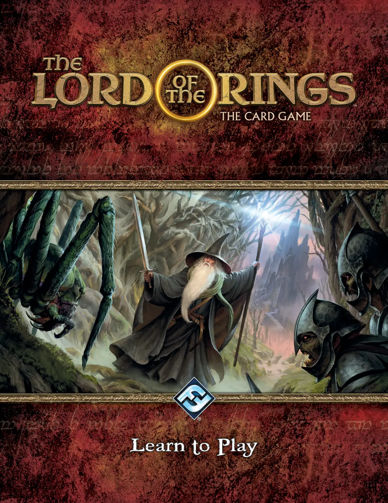
📝 第 1 页 AI 机翻对照（点击展开）
游戏教程
游戏教程
战役日志). 每位英雄限1张。
强制效果：当你控制的角色被消灭后，你的威胁等级提高1。
伤痕累累
沿着安都因河的旅程
负担
©2021 Middle-earth Enterprises ©2021 FFG
Magali Villeneuve
插图
3张战役卡
解决方式：每位玩家获得1份"门多尔的支援"(Mendor's Support)福利卡。将获得的卡牌加入战役牌池。
如果第3B阶段是"比恩之路"(Beorn's Path)，将"乌苟立安特的蜂群"(Ungoliant's Swarm)负担卡加入战役牌池。
如果第3B阶段是"不要离开小路"(Don't Leave the Path)，将"残留的毒液"(Lingering Venom)负担卡加入战役牌池。
"森林很危险，但那超出了人们预期会遇到的情况。"门多尔似乎很震惊。"我担心这片土地出了问题。我会继续与你们同行。"
黑暗魔多 - 第一部分
战役
穿越幽暗密林
你正在游玩战役模式。
设置：将门多尔(Mendor)放入游戏。
如果门多尔离开游戏，玩家输掉游戏。
瑟兰督伊王(Thranduil)指派了一名向导门多尔(Mendor)协助你们穿越幽暗密林(Mirkwood Forest)。
© 2021 Middle-earth Enterprises © 2021 FFG
插图 Ben Zweifel
10张任务卡
苍蝇与蜘蛛
穿越幽暗密林
他们见过的最糟糕的东西就是那些蛛网：黑暗而密集的蛛网，蛛丝异常粗厚，常常从一棵树延伸到另一棵树，或者缠绕在他们两侧较低的树枝上。没有蛛网横跨在小路上，但不知道是因为某种魔法保持小路畅通，还是出于其他原因。——《霍比特人》
1B1B
©2010 Middle-earth Enterprises ©2010 FFG
插图 Ben Zweifel
转盘组件
4个威胁等级转盘
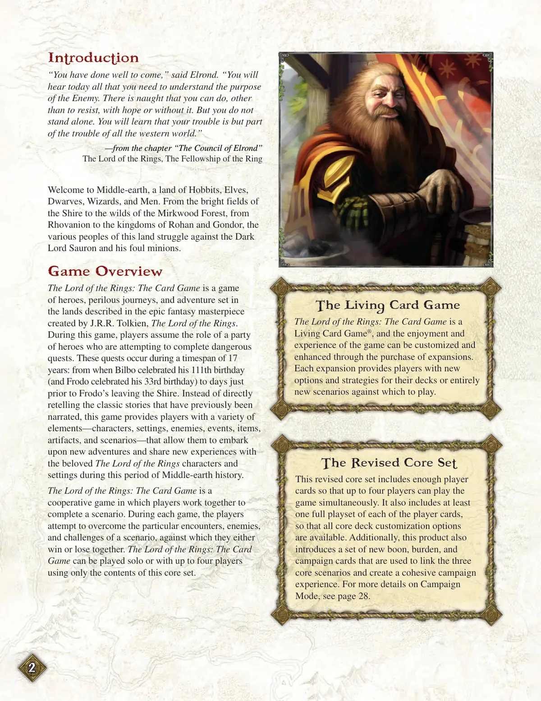
📝 第 2 页 AI 机翻对照（点击展开）
引言
"你们能来到这里，做得很好，"埃尔隆德说。"今天你们将听到所有需要了解的内容，以理解敌人的目的。除了抵抗，你们别无他法，无论抱有希望还是不抱有希望。但你们并非孤军奋战。你们将了解到，你们的麻烦不过是整个西方世界麻烦的一部分。"
——摘自《埃尔隆德会议》一章，《魔戒：护戒使者》
欢迎来到中土世界，一个有霍比特人、精灵、矮人、巫师和人类的土地。从夏尔的明亮田野到幽暗野的荒野，从罗瓦尼安到洛汗和刚铎的王国，这片土地上的各个民族都在与黑暗魔君索隆及其邪恶爪牙作斗争。
游戏概述
《魔戒：卡牌游戏》是一款英雄、危险旅程和冒险游戏，背景设定在J.R.R.托尔金创作的史诗奇幻杰作《魔戒》所描述的土地上。在游戏中，玩家扮演一群试图完成危险任务的英雄。这些任务发生在17年的时间跨度内：从比尔博庆祝111岁生日（佛罗多庆祝33岁生日）到佛罗多离开夏尔前几天的时间。这款游戏并非直接重述先前已讲述的经典故事，而是为玩家提供了各种元素——角色、场景、敌人、事件、物品、神器和小型战役——让他们能够在这个中土世界历史时期，与深受喜爱的《魔戒》角色和场景一起开启新的冒险，分享新的体验。
《魔戒：卡牌游戏》是一款合作游戏，玩家们共同努力完成一个小型战役。在每局游戏中，玩家们试图克服特定遭遇、敌人和挑战，他们要么一起赢，要么一起输。《魔戒：卡牌游戏》可以使用本核心盒的内容单人游玩，也可以最多四名玩家一起游玩。
活跃卡牌游戏
《魔戒：卡牌游戏》是一款活跃卡牌游戏®，通过购买扩展，游戏的乐趣和体验可以定制和增强。每个扩展为玩家提供了他们牌库的新选项和策略，或是全新的小型战役供玩家挑战。
修订版核心盒
这个修订版核心盒包含足够的玩家卡牌，可供最多四名玩家同时游戏。它还包含每张玩家卡牌至少一整套完整组，因此所有核心牌库定制选项都可用。此外，该产品还引入了一组新的恩赐、负担和战役卡，用于连接三个核心小型战役，并创建一个连贯的战役。
体验。有关战役模式的更多详情，请参见第28页。
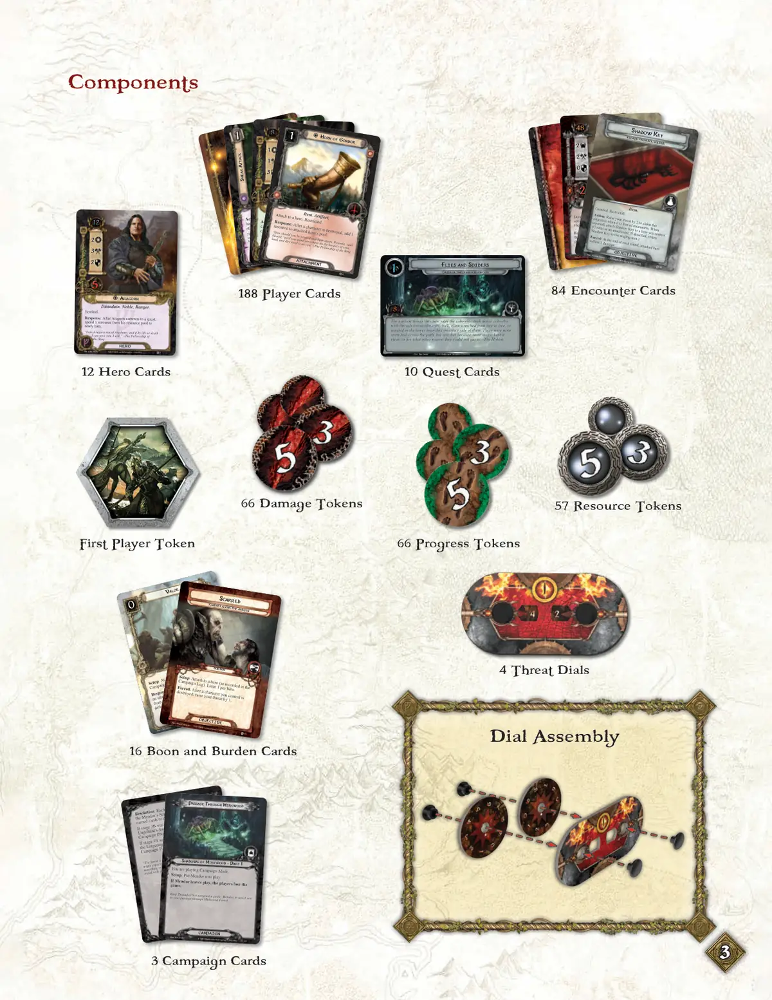
📝 第 3 页 AI 机翻对照（点击展开）
66 进度指示物
66 伤害指示物
57 资源指示物
组件
起始玩家指示物
12 英雄卡牌
杜内丹人。贵族。游侠。
‰ 阿拉贡 (Aragorn)
哨兵。
响应：在阿拉贡投入任务后，从他资源池中花费1资源来使他准备就绪。
"我是阿拉松之子阿拉贡；若我能以生或死拯救你们，我必将拯救。"——《魔戒：护戒使者》
英雄
插图
©2010 Middle-earth Enterprises ©2010 FFG
John Stanko
188 玩家卡牌
行动：从你的手牌中打出1张盟友卡牌进入游戏。在阶段结束时，如果该盟友仍在游戏中，将其返回你的手牌。
在最胖最胆小的霍比特人心中，隐藏着一颗勇气（虽然常常埋得很深）的种子，等待着某个最终而绝望的危险让它成长。——《魔戒：护戒使者》
事件
偷袭 (sneak attack)
插图
©2010 Middle-earth Enterprises ©2010 FFG
Winona Nelson
‰ 丹索尔 (Denethor)
刚铎。贵族。摄政王。
行动：使丹索尔 exhausted（疲劳）以查看遭遇牌库顶的牌。你可以将该牌移至牌库底。
"丹索尔大人不同于其他人：他看得远。"——贝瑞刚德，《魔戒：王者归来》
英雄
插图
©2010 Middle-earth Enterprises ©2010 FFG
Tiziano Baracchi
装备
物品。神器。
附着于一名英雄。受限。
响应：在一名角色被消灭后，为附着的英雄的资源池添加1资源。
"波洛米尔，你应该谨慎地再次吹响号角，"埃尔隆德说，"直到你再次站在你国度的边境，并且 dire need（迫切需要）降临到你身上。"——《魔戒：护戒使者》
‰ 刚铎号角 (Horn of gondor)
插图
©2010 Middle-earth Enterprises ©2010 FFG
Mark Winters
84 遭遇卡牌
哥布林。兽人。
哥布林狙击手 (Goblin Sniper)
在遭遇阶段，如果舞台区域有其他敌人，玩家不能选择与哥布林狙击手交战。
强制效果：如果在战斗阶段结束时哥布林狙击手仍在舞台区域，每位玩家对其控制的1个角色造成1点伤害。
敌人
©2010 Middle-earth Enterprises ©2010 FFG
插图. Alexandr Shaldin
4/14
受保护。受限。
行动：当此目标没有遭遇时，提高你的威胁度2点以宣称此目标。被宣称时，将暗影钥匙 (Shadow Key) 附着于你控制的一名英雄。
（算作一件装备。如果被分离，将暗影钥匙返回舞台区域。）
强制效果：在每个回合结束时，附着的英雄承受1点伤害。
目标
物品。
暗影钥匙 (SHadow KeY)
多尔哥多逃脱 (ESCAPE FROM DOL GULDUR)
©2010 Middle-earth Enterprises ©2010 FFG
插图. Nicholas Cloister
15/15
16 恩惠与负担卡牌
设置：附着于一名英雄（如战役日志所记录）。每名英雄限1张。
响应：在附着的英雄被宣告为攻击者后，使英勇 (Valor) exhausted（疲劳）以治愈附着的英雄1点伤害，并对防御敌人造成1点伤害。
装备
状态。
英勇 (vAlor)
恩惠 (BOON)
插图
©2021 Middle-earth Enterprises ©2021 FFG
Chris Rhan
目标
设置：附着于一名英雄（如战役日志所记录）。
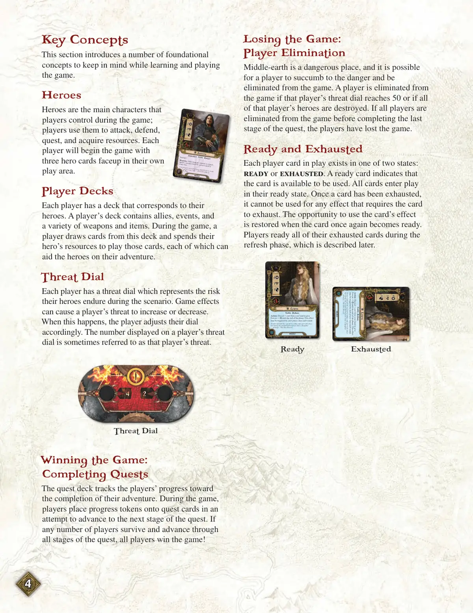
📝 第 4 页 AI 机翻对照（点击展开）
核心概念
本节介绍了一些基础概念，在学习游戏和游戏过程中需要牢记。
英雄
英雄是玩家在游戏中控制的主要角色；玩家使用他们进行攻击、防御、探索任务和获取资源。每位玩家将在游戏开始时在自己的游戏区域中翻开三张英雄卡牌。
玩家牌库
每位玩家都有一个与其英雄相对应的牌库。玩家的牌库包含盟友、事件以及各种武器和物品。在游戏中，玩家从自己的牌库中抽牌，并花费英雄的资源来打出这些卡牌，每张卡牌都能帮助英雄完成他们的冒险。
威胁度盘
每位玩家都有一个威胁度盘，代表他们的英雄在场景中承受的风险。游戏效果可能导致玩家的威胁度增加或减少。当这种情况发生时，玩家相应地调整他们的度盘。玩家威胁度盘上显示的数字有时被称为该玩家的威胁度。
赢得游戏：完成任务
任务牌堆追踪玩家完成其冒险的进度。在游戏中，玩家将进度标记放置在任务卡牌上，试图推进到任务的下一阶段。如果有任何数量的玩家存活并通过所有任务阶段，所有玩家都赢得游戏！
输掉游戏：玩家淘汰
中土世界是一个危险的地方，玩家有可能屈服于危险而被淘汰出游戏。如果玩家的威胁度盘达到50，或者该玩家的所有英雄都被摧毁，则该玩家被淘汰出游戏。如果在完成任务的最后阶段之前所有玩家都被淘汰，则玩家输掉了游戏。
就绪和疲惫
每张在场上的玩家卡牌处于两种状态之一：就绪或疲惫。就绪的卡牌表示该卡牌可以使用。所有卡牌进入游戏时都处于就绪状态。一旦卡牌被疲惫，它就不能用于任何需要该卡牌被疲惫的效果。当卡牌再次变为就绪时，使用该卡牌效果的机会得到恢复。玩家在刷新阶段（将在后文描述）将他们所有疲惫的卡牌变为就绪。
贵族。洛汗。
‰ 伊欧玟
行动：弃掉你手牌中的1张牌，为伊欧玟提供+1Ò直到本阶段结束。每轮每位玩家可以触发此效果一次。
她身穿银色束腰的白袍，身材苗条修长；但她看起来强壮而如钢铁般严厉，是国王的女儿。——《双塔奇兵》
英雄
插图
©2010 Middle-earth Enterprises ©2010 FFG
Gabrielle Portal
就绪
贵族。洛汗。
‰ 伊欧玟
行动：弃掉你手牌中的1张牌，为伊欧玟提供+1Ò直到本阶段结束。每轮每位玩家可以触发此效果一次。
每轮每位玩家可触发一次。
她身着白袍，腰系银带，身形苗条修长；
但她看起来强壮而严厉如钢铁，一位国王的女儿。
–《双塔奇兵》
英雄
插图
©2010 Middle-earth Enterprises ©2010 FFG
Gabrielle Portal
疲惫
威胁度盘
杜内丹人。贵族。游侠。
‰ 阿拉贡（Aragorn）
哨兵。
响应：在阿拉贡投入一个任务后，
从他资源池中花费1个资源来使他就绪。
"我是阿拉贡，阿拉松之子；若我能以生或死拯救你们，我必将做到。" –《魔戒：护戒使者》
英雄
插图
©2010 Middle-earth Enterprises ©2010 FFG
John Stanko
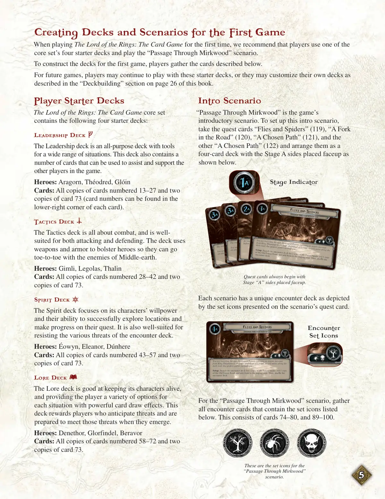
📝 第 5 页 AI 机翻对照（点击展开）
玩家起始牌库
《魔戒：卡牌游戏》核心盒包含以下四种起始牌库：
领导力牌库 Ì
领导力牌库是一种多功能牌库，拥有应对各种情况的工具。该牌库还包含一些可用于协助和支持游戏中其他玩家的卡牌。
英雄：阿拉贡、希优顿、格洛因
卡牌：所有编号为13-27的卡牌副本，以及两张编号为73的卡牌（卡牌编号可在每张卡牌的右下角找到）。
战术牌库 Ï
战术牌库专注于战斗，非常适合进攻和防御。该牌库使用武器和盔甲来增强英雄，使他们能够与中土世界的敌人正面交锋。
英雄：吉姆利、莱戈拉斯、萨林
卡牌：所有编号为28-42的卡牌副本，以及两张编号为73的卡牌。
灵气牌库 Ê
灵气牌库专注于其角色的意志力，以及他们成功探索地点并在任务上取得进展的能力。它也非常适合抵抗遭遇牌堆的各种威胁。
英雄：伊欧玟、伊莱诺、邓希尔
卡牌：所有编号为43-57的卡牌副本，以及两张编号为73的卡牌。
学识牌库 Î
学识牌库擅长保持其角色的存活，并通过强大的抽牌效果为玩家提供各种情况下的选择。该牌库奖励那些能够预见威胁并准备在威胁出现时应对的玩家。
英雄：迪耐瑟、格洛芬德尔、贝拉维尔
卡牌：所有编号为58-72的卡牌副本，以及两张编号为73的卡牌。
入门场景
"穿越幽暗密林"是游戏的入门场景。要设置这个入门场景，取任务卡"苍蝇与蜘蛛"(119)、"岔路口"(120)、"选择之路"(121)，以及另一张"选择之路"(122)，并将它们组成一个四张牌的牌组，将A面朝上放置，如下图所示。
每个场景都有一个独特的遭遇牌堆，如场景任务卡上所示的图标组所示。对于"穿越幽暗密林"场景，收集所有包含下面列出的图标组的遭遇卡。这包括卡牌74-80和89-100。
为第一局游戏创建牌库和场景
当第一次玩《魔戒：卡牌游戏》时，我们建议玩家使用核心盒中的四种起始牌库之一，并游玩"穿越幽暗密林"场景。
要为第一局游戏构建牌组，玩家收集下面描述的卡牌。
对于未来的游戏，玩家可以继续使用这些起始牌组，或者按照本书第26页"牌组构筑"部分所述自定义自己的牌组。
这些是"穿越幽暗密林"
场景的图标组。
遭遇
图标组
苍蝇与蜘蛛
穿越幽暗密林
你正穿越幽暗密林，携带着一封来自瑟兰督伊国王（Thranduil）给萝林（Lórien）的加拉德瑞尔女士（Lady Galadriel）的紧急信件。当你沿着黑暗的小径前行时，蜘蛛们聚集在你周围...
设置：从遭遇牌库中搜寻1份森林蜘蛛（Forest Spider）和1份古老森林道路（Old Forest Road），并将它们加入展示区。然后，洗混遭遇牌库。
1a1a
©2010 Middle-earth Enterprises ©2010 FFG
插图：Ben Zweifel
任务卡总是以"A"面朝上放置开始。
阶段指示器
a 选择的道路
穿越幽暗密林
小径蜿蜒进入森林中最黑暗、最错综复杂的部分之一...
你感觉到一股邪恶黑暗的存在正在追猎你，你迅速移动以试图避开它的邪恶。
3a
3a
©2010 Middle-earth Enterprises ©2010 FFG
插图：Yoann Boissonnet
???
a 选择的道路
穿越幽暗密林
小径蜿蜒进入森林中最黑暗、最错综复杂的部分之一...
你感觉到一股邪恶黑暗的存在正在追猎你，你迅速移动以试图避开它的邪恶。
3a
3a
©2010 Middle-earth Enterprises ©2010 FFG
插图：Yoann Boissonnet
???
a 道路分叉
穿越幽暗密林
当你穿越幽暗密林，被蜘蛛追赶时，森林小径在你面前分叉了...
2a
2a
©2010 Middle-earth Enterprises ©2010 FFG
插图：Ben Zweifel
苍蝇和蜘蛛
穿越幽暗密林
你正穿越幽暗密林，携带着一封来自瑟兰督伊国王（Thranduil）给萝林（Lórien）的加拉德瑞尔女士（Lady Galadriel）的紧急信件。当你沿着黑暗的小径前行时，蜘蛛们聚集在你周围...
设置：从遭遇牌库中搜寻1份森林蜘蛛（Forest Spider）和1份古老森林道路（Old Forest Road），并将它们加入展示区。然后，洗混遭遇牌库。
1a1a
©2010 Middle-earth Enterprises ©2010 FFG
插图：Ben Zweifel
1a1a
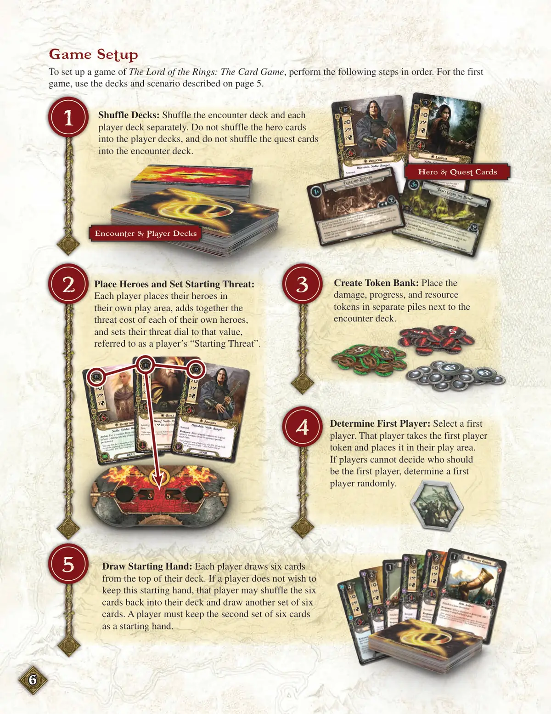
📝 第 6 页 AI 机翻对照（点击展开）
游戏设置
要设置一局《魔戒：卡牌游戏》，请按顺序执行以下步骤。第一局游戏，请使用第5页描述的牌库和剧情。
洗牌：分别洗混遭遇牌库和每位玩家的牌库。不要将英雄牌洗入玩家牌库，也不要将任务牌洗入遭遇牌库。
放置英雄并设置起始威胁值：
每位玩家将他们的英雄放置在自己的游戏区域，将他们自己每位英雄的威胁成本相加，并将他们的威胁指示盘设置到该值，这被称为玩家的"起始威胁值"。
英雄与任务牌
创建指示物库：将伤害、进度和资源指示物分别堆叠放置在遭遇牌库旁边。
抽取起始手牌：每位玩家从牌库顶部抽取六张牌。如果玩家不希望保留这起始手牌，该玩家可以将这六张牌洗回牌库并重新抽取另一组六张牌。玩家必须保留第二组六张牌作为起始手牌。
确定起始玩家：选择一位起始玩家。该玩家起始玩家指示物并将其放置在自己的游戏区域。如果玩家无法决定谁应该是起始玩家，则随机确定一位起始玩家。
遭遇牌库与玩家牌库
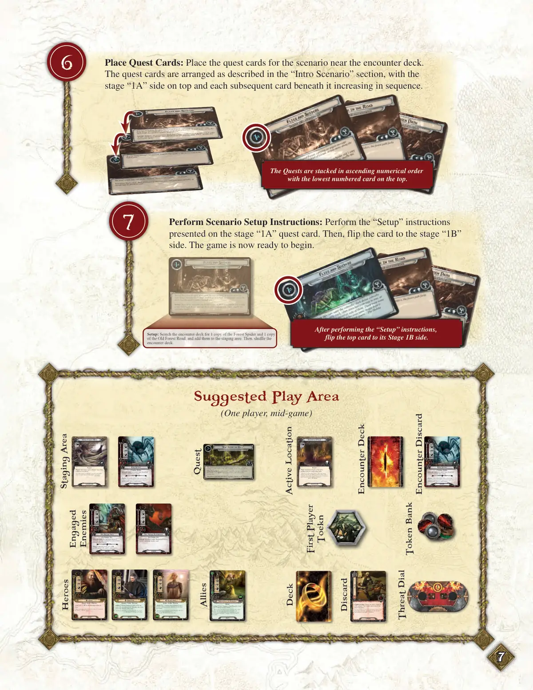
📝 第 7 页 AI 机翻对照（点击展开）
执行场景设置说明：执行舞台"1A"任务卡上呈现的"设置"说明。然后将卡片翻到舞台"1B"面。游戏现在可以开始了。
建议游戏区域
（一名玩家，游戏中期）
放置任务卡：将场景的任务卡放置在遭遇牌库附近。任务卡按照"入门场景"部分中的描述排列，舞台"1A"面朝上，每张后续卡片依次向下排列。任务卡按升序数字堆叠，编号最小的卡片在最上方。
苍蝇和蜘蛛
穿越幽暗密林
你正穿越幽暗密林，携带着一封来自瑟兰督伊国王送给萝林女士的紧急信息。当你沿着黑暗的小路前行时，蜘蛛们聚集在你周围...
设置：在遭遇牌库中搜索1张森林蜘蛛和1张古老森林道路，并将它们加入舞台区域。然后洗混遭遇牌库。
执行"设置"说明后，将顶部的卡片翻到其舞台1B面。
巨大的森林蜘蛛
森林.
地点
旅行：每位玩家必须 Exhaust 1 个他们操控的英雄才能旅行到这里。
当他走近时，他看到它是由蜘蛛网制成的，一个在后面，一个在上面，彼此纠缠在一起。
——《霍比特人》
5/12
生物。蜘蛛。
蜘蛛王
当揭示时：每位玩家必须选择并 Exhaust 1 个他们操控的角色。
暗影：防守玩家必须选择并 Exhaust 1 个他们操控的角色。（如果这次攻击未被防御，则为2个角色。）
敌人
舞台区域
英雄
盟友
牌库
弃牌堆
威胁轮盘
已交战
敌人
指示物库
起始玩家
指示物
任务
活跃地点
遭遇牌库
遭遇弃牌堆
"不要离开小路！"
穿越幽暗密林
阴影变得更深，你意识到一个邪恶的存在试图将你从小路上引开。你必须击败它才能通过这里。
当揭示时：每位玩家必须搜索遭遇牌库和弃牌堆，选择1张蜘蛛牌，并将其加入舞台区域。
玩家必须找到并击败乌苟立安特的子孙才能赢得本游戏。
3B
3B
当揭示时：起始玩家选择1个当前已投入任务的角色。对该角色造成2点伤害。
暗影：攻击敌人获得+1 Û。（如果这次攻击未被防御，则为+3 Û。）
多古尔。兽人。
多古尔兽人
敌人
强制：当多古尔兽人指挥官攻击时，额外获得1张暗影牌。
多古尔。兽人。
多古尔兽人指挥官
敌人
©2012 Middle-earth Enterprises ©2012 FFG
插图：David Lecossu
5/14
‰ 吉姆利
矮人。贵族。战士。
吉姆利每身上有一个伤害指示物，就获得+1 Û。
"人类在行动前需要许多言语。我的斧头在我手中蠢蠢欲动。"——《双塔奇兵》
英雄
1111
插图：
©2010 Middle-earth Enterprises ©2010 FFG
Tony Foti
‰ 迪耐希尔
刚铎。贵族。摄政官。
行动： Exhaust 迪耐希尔以查看遭遇牌库顶的牌。你可以将该牌移至牌库底。
"而迪耐希尔大人与其他人不同：他看得远。"——贝瑞刚德，《王者归来》
英雄
插图：
©2010 Middle-earth Enterprises ©2010 FFG
Tiziano Baracchi
贵族。诺多族。战士。
‰ 格洛芬德尔
行动： 从格洛芬德尔的资源池中支付1资源来治疗任意1个角色上的1点伤害。（每轮限一次。）
"你短暂地看到了他在彼岸的样子：初生者中的强者之一。"——甘道夫，《魔戒：护戒使者》
英雄
插图：
©2010 Middle-earth Enterprises ©2010 FFG
Katherine Dinger
生物。蜘蛛。
蜘蛛王
当揭示时：每位玩家必须选择并Exhaust他们控制的1个角色。
暗影：防守玩家必须选择并Exhaust他们控制的1个角色。（如果此攻击未被防御，则为2个角色。）
敌人
©2010 Middle-earth Enterprises ©2010 FFG
插图：John Wigley
1/12
行动： Exhaust 宁若德尔之女来治疗任意1个英雄上的最多2点伤害。
"这里是宁若德尔！西尔凡精灵很久以前曾为这条溪流创作了许多歌曲，如今我们在北方仍传唱着它们……我要洗洗脚，据说这水能治愈疲惫。"——莱戈拉斯，《魔戒：护戒使者》
西尔凡。
宁若德尔之女
盟友
插图：
©2010 Middle-earth Enterprises ©2010 FFG
Magali Villeneuve
战斗行动：选择与一名玩家交战的1个敌人。该敌人本阶段不能攻击该玩家。
几名勇敢的士兵被布置在他们面前，佯装抵抗，许多人倒下了，其余的人则退到两侧逃走。——《霍比特人》
事件
佯攻
插图：
©2010 Middle-earth Enterprises ©2010 FFG
Lius Lasahido
魔法溪流
森林。
地点
当魔法溪流是激活地点时，玩家不能摸牌。
"那里有一条溪流，我知道，又黑又急，横跨小径。你既不能饮用，也不能在其中沐浴；因为我听说它带有魔法，能使人昏昏欲睡，遗忘一切。"——贝恩，《霍比特人》
©2010 Middle-earth Enterprises ©2010 FFG
插图：Ben Zweifel
13/14
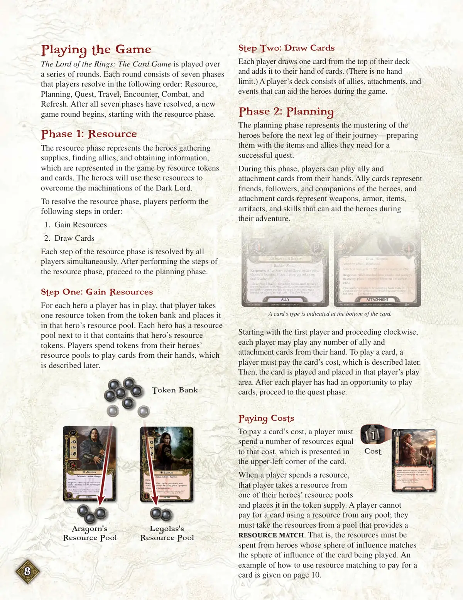
📝 第 8 页 AI 机翻对照（点击展开）
游戏进行
《指环王：卡牌游戏》(The Lord of the Rings: The Card Game) 通过一系列轮次进行。每轮包含七个阶段，玩家按以下顺序依次解决：资源阶段、规划阶段、探索阶段、旅行阶段、遭遇阶段、战斗阶段和刷新阶段。当所有七个阶段都解决后，新一轮游戏开始，从资源阶段开始。
阶段1：资源
资源阶段代表英雄们收集补给、寻找盟友和获取信息，这些在游戏中由资源指示物和卡牌表示。英雄们将使用这些资源来对抗黑暗之主的阴谋。
要解决资源阶段，玩家按顺序执行以下步骤：
1. 获取资源
2. 摸牌
资源阶段的每个步骤由所有玩家同时解决。执行完资源阶段的步骤后，进入规划阶段。
第一步：获取资源
对于玩家场上每名英雄，该玩家从指示物库中取出一个资源指示物，并将其放入该英雄的资源池中。每名英雄旁边都有一个资源池，包含该英雄的资源指示物。玩家从其英雄的资源池中花费指示物来打出手牌，这将在后文描述。
第二步：摸牌
每位玩家从其牌库顶部摸一张牌，并将其加入自己的手牌。（没有手牌上限。）玩家的牌库由盟友、附属物和事件组成，这些可以在游戏过程中帮助英雄。
阶段2：规划
规划阶段代表英雄们在旅程的下一阶段前集结力量——用他们需要的物品和盟友为他们做好准备，以成功完成探索任务。
在此阶段，玩家可以打出手牌中的盟友和附属物卡牌。盟友卡牌代表英雄的朋友、追随者和同伴，附属物卡牌代表武器、盔甲、物品、神器以及可以在冒险过程中帮助英雄的技能。
从起始玩家开始，按顺时针方向，每位玩家可以打出任意数量的盟友和附属物卡牌。要打出一张卡牌，玩家必须支付该卡牌的费用，这将在后文描述。然后，该卡牌被打出并放置在该玩家的游戏区域中。当每位玩家都有机会打出卡牌后，进入探索阶段。
支付费用
要支付卡牌的费用，玩家必须花费等于该费用的资源数量，该费用显示在卡牌的左上角。当玩家花费一个资源时，该玩家从其一名英雄的资源池中取出一个资源，并将其放入指示物供应区。玩家不能使用任何池中的资源来支付卡牌费用；他们必须从提供资源匹配的池中取出资源。也就是说，资源必须
从其影响力领域与所打出的卡牌影响力领域相匹配的英雄身上花费。关于如何使用资源匹配来支付卡牌费用的示例在第10页给出。
卡牌类型显示在卡牌底部。
响应：当雪堡斥候进入游戏后，选择一个地点。在该地点上放置1个进度指示物。
"...他看到的不是阴影，也不是模糊的影像，而是骑兵的小小身影，许多骑兵，他们矛尖上晨光的闪烁，就像凡人视线之外微小星辰的闪烁。——《双塔奇兵》
洛汗。斥候。
雪堡斥候
盟友
插图
©2010 中土企业 ©2010 FFG
大卫·霍恩
盟友
©2010 中土企业 ©2010 FFG
附件
物品。武器。
附着于一个英雄。受限。
当附着的英雄攻击一个兽人时，获得+1 Û。
响应：当附着的英雄攻击并消灭一个敌人后，在当前任务上放置1个进度指示物。
"佩戴一把为兽人战争而打造的、在那么多歌谣中被传颂的刚多林之剑，真是相当壮观...——《霍比特人》
插图
©2010 中土企业 ©2010 FFG
大卫·莱科苏
附件
©2010 中土企业 ©2010 FFG
行动： Exhaust 你控制的一个角色，立即将其宣布为对任何符合条件的敌人目标的攻击者（并解决其攻击）。
"...因为打出第一击的人，如果击得足够有力，可能就无需再击第二击了。"
——甘道夫，《双塔奇兵》
事件
快速打击
插图
©2010 中土企业 ©2010 FFG
莎拉·比德尔
费用
贵族。西尔凡。战士。
‰ 莱戈拉斯
远程。
响应：当莱戈拉斯参与一次消灭了敌人的攻击后，在当前任务上放置2个进度指示物。
"我能走这条路，但其他人没有这个技能。"
——《魔戒：护戒使者》
英雄
插图
©2010 中土企业 ©2010 FFG
玛格丽·维勒纽夫
登丹人。贵族。游侠。
‰ 阿拉贡
哨兵。
响应：当阿拉贡投入任务后，从他的资源池中花费1个资源来使他就绪。
"我是阿拉松之子阿拉贡；如果我能用生命或死亡拯救你们，我会的。"——《魔戒：护戒使者》
英雄
插图
©2010 中土企业 ©2010 FFG
约翰·斯坦科
指示物库
莱戈拉斯的资源池
阿拉贡的资源池
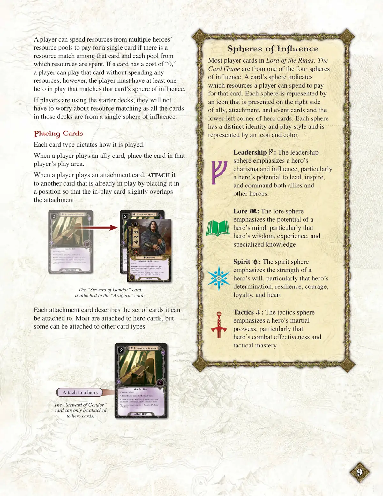
📝 第 9 页 AI 机翻对照（点击展开）
玩家可以从多个英雄的资源池中花费资源来支付一张卡牌，前提是该卡牌与每个花费资源的池之间存在资源匹配。如果一张卡牌的成本为"0"，玩家可以在不花费任何资源的情况下打出该卡牌；但是，玩家必须至少有一个在场的英雄与该卡牌的影响力领域相匹配。如果玩家使用起始牌组，他们不必担心资源匹配问题，因为这些牌组中的所有卡牌都来自同一个影响力领域。
放置卡牌
每种卡牌类型决定了它的打出方式。
当玩家打出盟友卡牌时，将该卡牌放置在该玩家的游戏区域中。
当玩家打出附属卡牌时，将其附加到另一张已在场的卡牌上，放置位置应使在场的卡牌略微覆盖附属卡牌。
每张附属卡牌描述了它可以附加到的卡牌集合。大多数附属卡牌附加到英雄卡牌上，但有些可以附加到其他类型的卡牌上。
影响力领域
《魔戒：卡牌游戏》中的大多数玩家卡牌都来自四个影响力领域之一。卡牌的影响力领域表明玩家可以花费哪些资源来支付该卡牌。每个领域都由一个图标表示，该图标出现在盟友、附属和事件卡牌的右侧，以及英雄卡牌的左下角。每个领域都有独特的身份和游戏风格，并通过图标和颜色表示。
领导力 Ì：领导力领域强调英雄的魅力和影响力，特别是英雄领导、激励和指挥盟友及其他英雄的潜力。
学识 Î：学识领域强调英雄心智的潜力，特别是英雄的智慧、经验和专业知识。
精神 Ê：精神领域强调英雄意志的力量，特别是英雄的决心、韧性、勇气、忠诚和内心。
战术 Ï：战术领域强调英雄的武艺，特别是英雄的战斗效能和战术掌握。
"刚铎摄政王"卡牌附加到"阿拉贡"卡牌上。
附属
刚铎。称号。
附加到一名英雄上。
附加的英雄获得刚铎特性。
行动： exhausted 刚铎摄政王，为附加的英雄的资源池添加2个资源。
"昨天已经下达了命令。"——迪耐瑟，《王者归来》
‰ 刚铎摄政王
插图
©2010 Middle-earth Enterprises ©2010 FFG
Empty Room Studios
附属
刚铎。称号。
附加到一名英雄上。
附加的英雄获得刚铎特性。
行动： exhausted 刚铎摄政王，为附加的英雄的资源池添加2个资源。
"昨天已经下达了命令。"——迪耐瑟，《王者归来》
‰ 刚铎摄政王
插图
©2010 Middle-earth Enterprises ©2010 FFG
Empty Room Studios
登丹人。贵族。游侠。
‰ 阿拉贡
Sentinel
响应：当阿拉贡（Aragorn）投身于一项任务时，
从他资源池中花费1点资源来使他就绪。
"我是阿拉贡，阿拉松之子；若我能以生或死拯救你们，我必会。"——《魔戒：护戒使者》
HEro
插图
©2010 Middle-earth Enterprises ©2010 FFG
John Stanko
"刚铎摄政王"（Steward of Gondor）
卡牌只能附加到英雄卡牌上。
附件
刚铎。称号。
附加到一个英雄上。
附加的英雄获得刚铎特性。
行动： Exhaust（ exhausted）刚铎摄政王，为附加的英雄的资源池增加2点资源。
"昨日已有命令。"——迪耐瑟（Denethor），《魔戒：王者归来》
‰ sTEwArd of gondor
插图
©2010 Middle-earth Enterprises ©2010 FFG
Empty Room Studios
附加到一个英雄上。
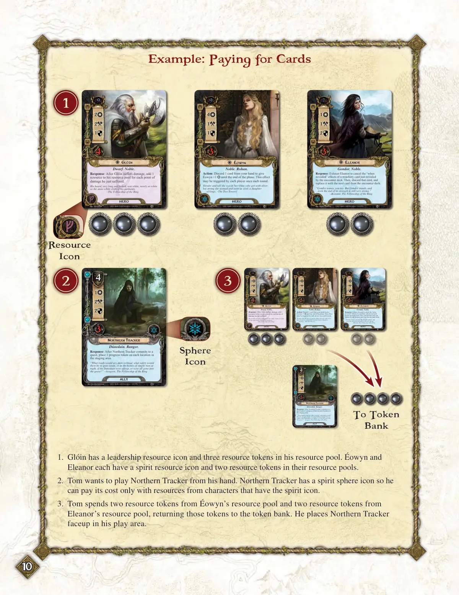
📝 第 10 页 AI 机翻对照（点击展开）
资源
图标
Ill
T
G
d
领域
图标
响应：在北方追踪者投入一个任务后，在每个处于准备区的地点上放置1个进度指示物。
"如果杜内丹人沉睡，或都已长眠于坟墓，谁还敢踏上那些道路，安静的夜晚里，在普通人的家园中，又有什么安全可言？" –阿拉贡，《魔戒：护戒使者》
杜内丹人。游侠。
norTHErn TrACkEr
盟友
插图
©2010 Middle-earth Enterprises ©2010 FFG
Kristina Gehrmann
‰ glóin
矮人。贵族。
响应：在格洛因受到伤害后，为他每点伤害在他的资源池中添加1个资源。
他的胡子很长，分叉，是白色的，几乎和他衣服的雪白布料一样白。
–《护戒使者》
HEro
插图
©2010 Middle Earth Enterprises ©2010 FFG
Tom Garden
贵族。洛汗。
‰ Éowyn
行动：从你的手牌中弃掉1张牌，给伊欧文+1Ò直到阶段结束。每名玩家每轮可触发此效果一次。
她身穿银色束腰的白袍，身材修长高挑；但她看起来强壮而刚毅如钢铁，一位国王的女儿。–《双塔奇兵》
HEro
插图
©2010 Middle-earth Enterprises ©2010 FFG
Gabrielle Portal
刚铎。贵族。
‰ ElEAnor
响应： Exhaust Eleanor to cancel the "when revealed" effects of a treachery card just revealed by the encounter deck. Then, discard that card, and replace it with the next card from the encounter deck.
"你说刚铎正在衰落。但刚铎依然屹立，即使它力量的终结仍然非常强大。"
–博罗米尔，《护戒使者》
HEro
插图
©2010 Middle-earth Enterprises ©2010 FFG
Magali Villeneuve
- 格洛因有1个领导力资源图标和3个资源指示物在他的资源池中。伊欧文和伊莉诺各有一个精神领域资源图标和2个资源指示物在他们的资源池中。
- 汤姆想要从他的手牌中打出北方追踪者。北方追踪者有一个精神领域图标，所以他只能使用带有精神图标的角色资源来支付其费用。
- 汤姆花费了2个资源指示物从伊欧文的资源池和2个资源指示物从伊莉诺的资源池，将这些指示物归还到指示物库。他将北方追踪者正面朝上放置在他的游戏区域。
示例：支付卡牌费用
响应：在北方追踪者投入一个任务后，在每个处于准备区的地点上放置1个进度指示物。
"如果杜内丹人沉睡，或都已长眠于坟墓，谁还敢踏上那些道路，安静的夜晚里，在普通人的家园中，又有什么安全可言？" –阿拉贡，《魔戒：护戒使者》
杜内丹人。游侠。
norTHErn TrACkEr
盟友
插图
©2010 Middle-earth Enterprises ©2010 FFG
Kristina Gehrmann
贵族。洛汗。
‰ Éowyn
行动：从你的手牌中弃掉1张牌，给
Éowyn
直到阶段结束，+1攻击力。每名玩家每轮可触发此效果一次。
她身形苗条修长，身着银色束腰的白袍；但她看起来强壮而刚毅如钢铁，是国王的女儿。——《双塔奇兵》
英雄
插图
©2010 Middle-earth Enterprises ©2010 FFG
Gabrielle Portal
刚铎。贵族。
‰ 伊莱恩尔（ElEAnor）
响应： Exhaust Eleanor to cancel the "when revealed" effects of a treachery card just revealed by the encounter deck. Then, discard that card, and replace it with the next card from the encounter deck.
"你说刚铎正在衰落。但刚铎依然屹立，即使它力量的终结也依然非常强大。"——博罗米尔，《魔戒：护戒使者》
英雄
插图
©2010 Middle-earth Enterprises ©2010 FFG
Magali Villeneuve
‰ 格洛因（glóin）
矮人。贵族。
响应： After Glóin suffers damage, add 1 resource to his resource pool for each point of damage he just suffered.
他的胡子很长，分叉，是白色的，几乎和他衣服的雪白布料一样白。——《魔戒：护戒使者》
英雄
插图
©2010 Middle Earth Enterprises ©2010 FFG
Tom Garden
到指示物
银行
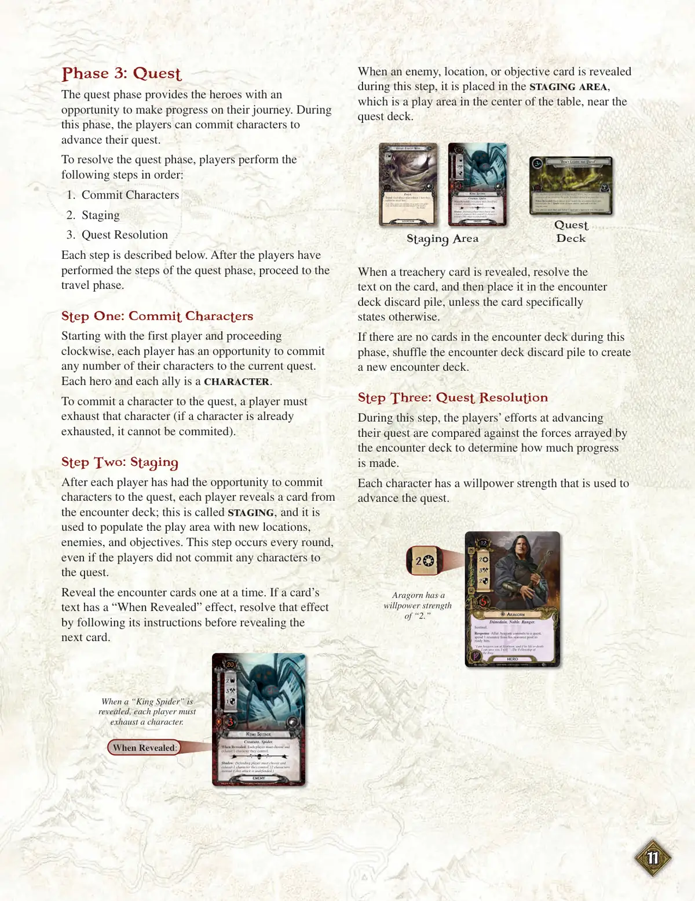
📝 第 11 页 AI 机翻对照（点击展开）
1111
第三阶段：任务
任务阶段为英雄们提供了在旅途中取得进展的机会。在此阶段，玩家可以派出角色来推进他们的任务。
要解决任务阶段，玩家按顺序执行以下步骤：
1. 派出角色
2. 展示阶段
3. 任务结算
每个步骤将在下文描述。玩家完成任务阶段的步骤后，进入旅行阶段。
第一步：派出角色
从第一位玩家开始，按顺时针方向，每位玩家都有机会派出任意数量的角色到当前任务中。每位英雄和每位盟友都是角色。
要将角色派往任务，玩家必须使该角色疲劳（如果角色已经疲劳，则不能被派出）。
第二步：展示阶段
每位玩家都有机会派出角色到任务中后，每位玩家从遭遇牌库中揭示一张卡牌；这称为展示阶段，用于在游戏区域中放置新的地点、敌人和目标。此步骤每轮都会进行，即使玩家没有派出任何角色到任务中。
一次揭示一张遭遇牌。如果卡牌文本有"当揭示时"效果，在揭示下一张卡牌前，按照其说明解决该效果。
在此步骤中揭示敌人、地点或目标卡牌时，将其放置在展示区域，这是位于桌子中央、靠近任务牌堆的游戏区域。
揭示背叛卡牌时，解决卡牌上的文本，然后将其放入遭遇牌库弃牌堆，除非卡牌特别说明其他情况。
如果在此阶段遭遇牌库中没有卡牌，洗混遭遇牌库弃牌堆以创建新的遭遇牌库。
第三步：任务结算
在此步骤中，玩家推进任务的努力将与遭遇牌库部署的力量进行比较，以确定取得了多少进展。
每个角色都有用于推进任务的意志力强度。
great ForeSt web
森林。
地点
旅行：每位玩家必须使其控制的1位英雄疲劳才能旅行至此。
随着他走近，他看到它是用蜘蛛网一层层地编织在一起，互相纠缠。
——《霍比特人》
©2010 Middle-earth Enterprises ©2010 FFG
插图：Jason Ward
5/12
生物。蜘蛛。
蜘蛛王
当揭示时：每位玩家必须选择并使其控制的1位角色疲劳。
暗影：防御玩家必须选择并使其控制的1位角色疲劳。（如果此攻击未被防御，则为2个角色。）
敌人
©2010 Middle-earth Enterprises ©2010 FFG
插图：John Wigley
1/12
展示区域
"不要离开小路！"
穿越幽暗密林
阴影变得更加黑暗，你意识到一个邪恶的存在正试图将你引离道路。你必须击败它才能通过此处。
当揭示时：每位玩家必须从遭遇牌库和弃牌堆中寻找1张他们选择的蜘蛛牌，并将其加入舞台区域。
玩家必须找到并击败乌苟烈丝的子孙才能赢得此游戏。
<!--page:3B-->
3B
3B
©2010 Middle-earth Enterprises ©2010 FFG
插图：Ben Zweifel
任务
牌库
努门诺尔人。贵族。游侠。
‰ 阿拉贡
哨兵。
响应：在阿拉贡投入任务后，从他资源池中花费1个资源来使他就绪。
"我是阿拉贡，阿拉松之子；若我能以生或死拯救你们，我必会。"——《魔戒：护戒使者》
英雄
插图
©2010 Middle-earth Enterprises ©2010 FFG
John Stanko
阿拉贡有意志力强度"2"。
当"蜘蛛王"被揭示时，每位玩家必须 Exhaust 1个角色。
生物。蜘蛛。
蜘蛛王
当揭示时：每位玩家必须选择并 Exhaust 1个他们控制的角色。
暗影：防御玩家必须选择并 Exhaust 1个他们控制的角色。（如果此攻击未被防御，则为2个角色。）
敌人
©2010 Middle-earth Enterprises ©2010 FFG
插图：John Wigley
1/12
当揭示时：E
h
1 h
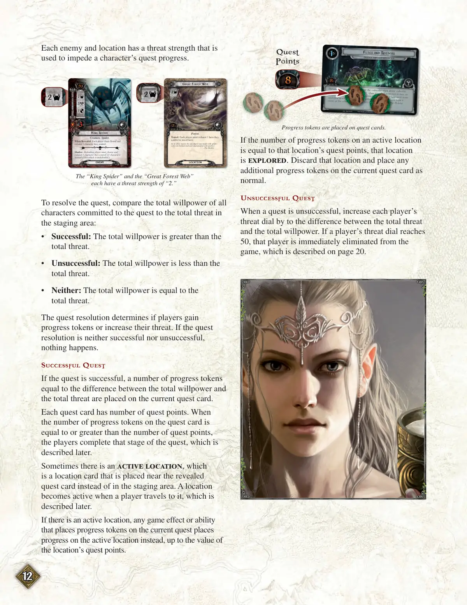
📝 第 12 页 AI 机翻对照（点击展开）
每个敌人和地点都有一个威胁强度，用于阻碍角色的任务进度。
要解决任务，将所有投入到任务中的角色的意志力总和与集结区的威胁总和进行比较：
• 成功：意志力总和大于威胁总和。
• 失败：意志力总和小于威胁总和。
• 平局：意志力总和等于威胁总和。
任务解决结果决定玩家是否获得进度指示物或增加他们的威胁。如果任务解决结果既非成功也非失败，则什么都不会发生。
成功任务
如果任务成功，将等于意志力总和与威胁总和之差的进度指示物数量放置在当前任务卡上。
每张任务卡都有一定数量的任务点数。当任务卡上的进度指示物数量等于或大于任务点数时，玩家就完成了该任务阶段，这将在后面描述。
有时会有一个活跃地点，这是一张放置在已揭示任务卡附近而非集结区的地点卡。当玩家前往某个地点时，该地点变为活跃状态，这将在后面描述。
如果有活跃地点，任何将进度指示物放置在当前任务上的游戏效果或能力改为将进度放置在活跃地点上，最多达到该地点的任务点数值。
如果活跃地点上的进度指示物数量等于该地点的任务点数，则该地点已被探索。弃置该地点，并将任何额外的进度指示物正常放置在当前任务卡上。
失败任务
当任务失败时，将每个玩家的威胁度盘增加等于威胁总和与意志力总和之差的数值。如果玩家的威胁度盘达到50，该玩家立即被淘汰出局，这将在第20页描述。
生物。蜘蛛。
蜘蛛王
当揭示时：每位玩家必须选择并弃用1张他们控制的角色牌。
暗影：防御玩家必须选择并弃用1张他们控制的角色牌。（如果这次攻击未被防御，则改为2张角色牌。）
eneMY
©2010 Middle-earth Enterprises ©2010 FFG
插图 John Wigley
1/12
大森林蛛网
森林。
地点
旅行：每位玩家必须弃用1张他们控制的英雄牌才能前往此处。
当他走近时，他看到它是由蜘蛛网一层层叠在一起，互相纠缠而成的。
——《霍比特人》
©2010 Middle-earth Enterprises ©2010 FFG
插图 Jason Ward
5/12
"蜘蛛王"和"大森林蛛网"的威胁强度均为"2"。
进度指示物被放置在任务卡上。
苍蝇和蜘蛛
穿过幽暗密林
他们看到的最糟糕的东西是那些蛛网：黑暗而密集的蛛网
线程异常粗壮，常常从一棵树延伸到另一棵树，或缠绕在它们两侧较低的树枝上。没有线程横跨在小径上，但不知是因为某种魔法保持小径畅通，还是出于其他他们无法猜测的原因。–《霍比特人》
1B1B
©2010 Middle-earth Enterprises ©2010 FFG
插图：Ben Zweifel
探索
分数
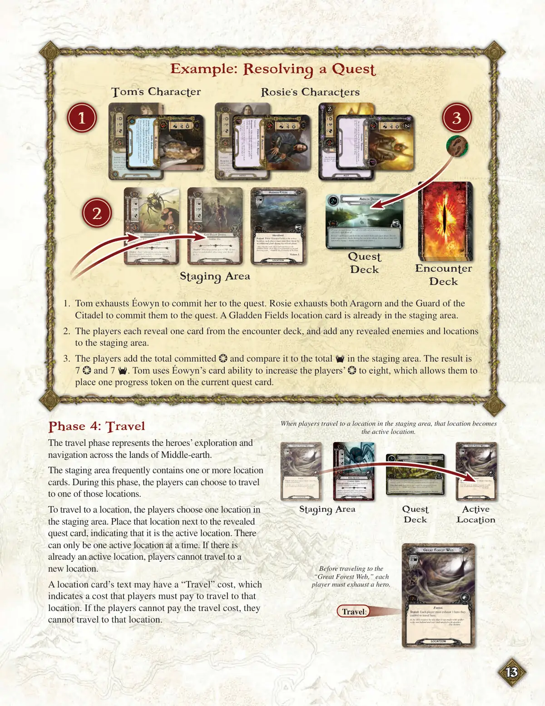
📝 第 13 页 AI 机翻对照（点击展开）
- 汤姆耗尽伊欧玟将她投入任务。罗西耗尽阿拉贡和刚铎卫兵将他们投入任务。一个葛顿野地地点卡已在展示区。
- 玩家各自从遭遇牌库中揭示一张牌，并将揭示的敌人和地点添加到展示区。
- 玩家计算投入的总 Ò 并与展示区的总 $ 进行比较。结果是 7 Ò 和 7 $。汤姆使用伊欧玟的卡牌能力将玩家的 Ò 提高到八，这使他们能够在当前任务卡上放置一个进度标记。
第4阶段：旅行
旅行阶段代表英雄们在中土大陆的探索和导航。
展示区通常包含一个或多个地点卡。在此阶段，玩家可以选择前往这些地点中的一个。
要前往一个地点，玩家选择展示区中的一个地点。将该地点放在已揭示的任务卡旁边，表明它是活跃地点。一次只能有一个活跃地点。如果已经有一个活跃地点，玩家不能前往新地点。
地点卡的文本可能有"旅行"成本，这表示玩家必须支付才能前往该地点的成本。如果玩家无法支付旅行成本，他们就不能前往该地点。
示例：解决任务
葛顿野地
沼泽地
地点
强制：当葛顿野地是活跃地点时，每个玩家必须在刷新阶段额外提高一点威胁值。
"有一次他们乘船顺流而下，来到葛顿野地，那里有巨大的鸢尾花床和开花芦苇。"——甘道夫，《魔戒：护戒使者》
胜利 3。
©2010 Middle-earth Enterprises ©2010 FFG
插图：Ben Zweifel
贵族。洛汗。
‰ 伊欧�
行动：弃掉你手牌中的1张牌，为伊欧玟提供+1 Ò 直到本阶段结束。此效果每位玩家每轮可触发一次。
她身披银色束腰的白袍，苗条而高挑；但她似乎坚强如钢，严厉如铁，一位国王的女儿。——《双塔奇兵》
英雄
插图
©2010 Middle-earth Enterprises ©2010 FFG
Gabrielle Portal
贵族。洛汗。
‰ 伊欧�
行动：弃掉你手牌中的1张牌，为伊欧玟提供+1 Ò 直到本阶段结束。此效果每位玩家每轮可触发一次。
她身披银色束腰的白袍，苗条而高挑；但她似乎坚强如钢，严厉如铁，一位国王的女儿。——《双塔奇兵》
英雄
插图
©2010 Middle-earth Enterprises ©2010 FFG
Gabrielle Portal
杜内丹人。贵族。游侠。
‰ 阿拉贡
哨兵。
响应：在阿拉贡投入任务后，从他资源池中花费1个资源来准备他。
"我是阿拉松之子阿拉贡；如果我能通过生或死拯救你们，我就会拯救你们。"——《魔戒：护戒使者》
沿着安都因河的旅程
当你的敌人骚扰木筏时，保持平衡并有效地击退他们是困难的。
在每个探索阶段额外揭示1张遭遇牌。在遭遇阶段不进行接触判定。（每位玩家仍然可以选择在每个遭遇阶段接触1个敌人。）
2b
2b
<!--page:2b-->
遭遇牌库
探索牌库
集结区
Tom的角色
Rosie的角色
大森林蛛网
森林。
地点
移动：每位玩家必须 Exhaust 1 个他们操控的英雄。
当他走近时，他看到它是由蜘蛛网一层层地叠在一起，互相纠缠而成的。
——《霍比特人》
5/12
移动：E
在前往"大森林蛛网"之前，每位玩家必须 Exhaust 一个英雄。
大森林蛛网
森林。
地点
移动：每位玩家必须 Exhaust 1 个他们操控的英雄。
当他走近时，他看到它是由蜘蛛网一层层地叠在一起，互相纠缠而成的。
——《霍比特人》
5/12
大森林蛛网
森林。
地点
移动：每位玩家必须 Exhaust 1 个他们操控的英雄。
当他走近时，他看到它是由蜘蛛网
<!--page:5/12-->
一张网在后面和上面，彼此纠缠。
——《霍比特人》
©2010 Middle-earth Enterprises ©2010 FFG
插图：Jason Ward
大蜘蛛
生物。蜘蛛。
当揭示时：每位玩家必须选择并 Exhaust 1 个他们控制的角色。
暗影：防御玩家必须选择并 Exhaust 1 个他们控制的角色。（如果这次攻击未被防御，则为 2 个角色。）
<!--page:1/12-->
"不要离开小路！"
穿越幽暗密林
阴影变得越来越深，你意识到一个邪恶的存在正试图将你从小路上引开。你必须击败它才能通过这里。
当揭示时：每位玩家必须搜寻遭遇牌库和弃牌堆，找出 1 张他们选择的蜘蛛卡牌，并将其加入舞台区域。
玩家必须找到并击败乌苟立安特的后裔才能赢得本游戏。
<!--page:3B-->
3B
3B
<!--page:©2010 Middle-earth Enterprises ©2010 FFG-->
<!--page:Illus. Ben Zweifel-->
探索牌库
活跃区域
活跃地点
当玩家前往舞台区域中的一个地点时，该地点成为活跃地点。
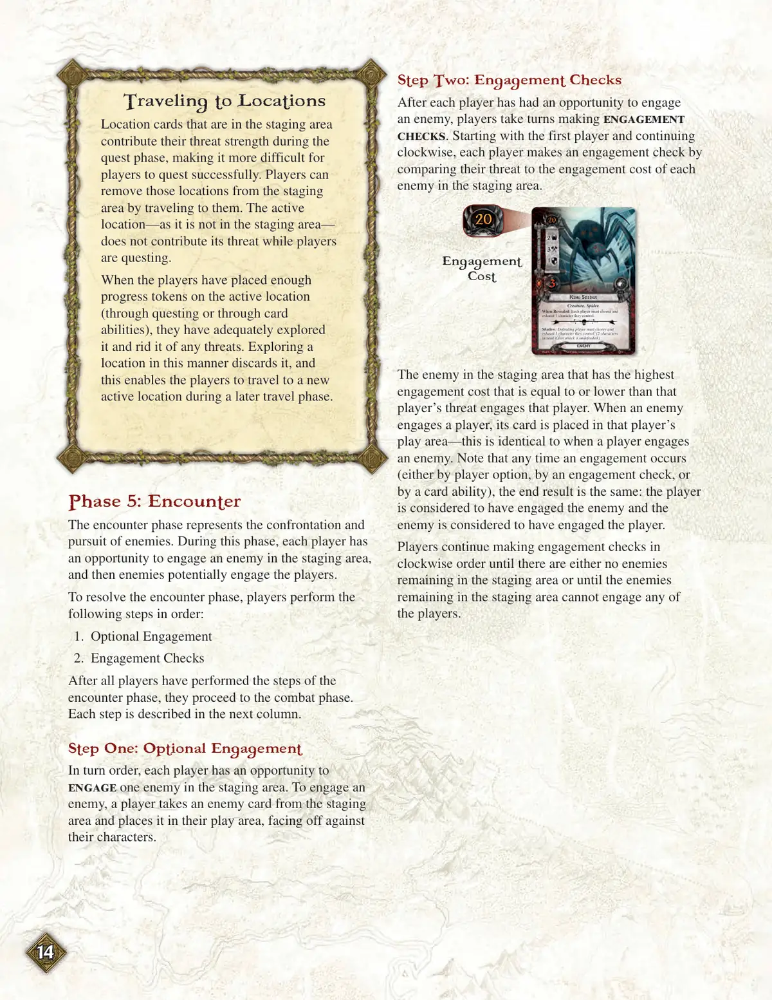
📝 第 14 页 AI 机翻对照（点击展开）
第5阶段：遭遇
遭遇阶段代表与敌人的对抗和追击。在此阶段，每位玩家都有机会与舞台区域的敌人交战，然后敌人可能会与玩家交战。
要解决遭遇阶段，玩家按顺序执行以下步骤：
1. 可选交战
2. 交战检查
所有玩家完成遭遇阶段的步骤后，他们进入战斗阶段。每个步骤在下一栏描述。
第一步：可选交战
按回合顺序，每位玩家有机会与舞台区域的一个敌人交战。要交战一个敌人，玩家从舞台区域取出一张敌人卡牌，并将其放置在自己的游戏区域，与他们的角色对峙。
第二步：交战检查
每位玩家都有机会与一个敌人交战后，玩家轮流进行交战检查。从第一位玩家开始，顺时针进行，每位玩家通过比较自己的威胁值与舞台区域中每个敌人的交战成本来进行交战检查。
舞台区域中交战成本最高且等于或低于该玩家威胁值的敌人会与该玩家交战。当一个敌人与玩家交战时，其卡牌被放置在该玩家的游戏区域中——这与玩家交战敌人时相同。请注意，任何时候发生交战（无论是通过玩家选择、交战检查还是通过卡牌能力），最终结果都是相同的：玩家被认为已交战该敌人，而敌人被认为已交战该玩家。
玩家继续按顺时针顺序进行交战检查，直到舞台区域中没有剩余敌人，或者舞台区域中剩余的敌人无法与任何玩家交战。
前往地点
舞台区域中的地点卡牌在探索阶段会贡献其威胁强度，使玩家成功探索变得更加困难。玩家可以通过前往这些地点来将其从舞台区域移除。由于当前地点不在舞台区域，当玩家探索时，它不会贡献其威胁值。
当玩家在当前地点放置了足够的进度标记（通过探索或通过卡牌能力）时，他们已充分探索了该地点并消除了任何威胁。以这种方式探索一个地点会将其弃置，这使玩家可以在稍后的旅行阶段前往一个新的当前地点。
生物。蜘蛛。
蜘蛛王
当揭示时：每位玩家必须选择并 Exhaust 1 个他们控制的角色。
暗影：防御玩家必须选择并 Exhaust 1 个他们控制的角色。（如果这次攻击未被防御，则为 2 个角色。）
©2010 Middle-earth Enterprises ©2010 FFG
插图 John Wigley
1/12
交战
费用
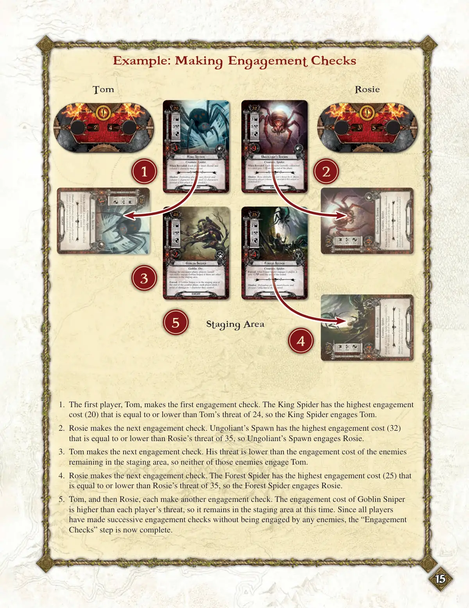
📝 第 15 页 AI 机翻对照（点击展开）
- 首位玩家汤姆进行首次交战检查。国王蜘蛛的交战费用最高（20），且小于或等于汤姆的24威胁度，因此国王蜘蛛与汤姆交战。
- 罗西进行下一次交战检查。乌苟立安的产物的交战费用最高（32），且小于或等于罗西的35威胁度，因此乌苟立安的产物与罗西交战。
- 汤姆进行下一次交战检查。他的威胁度低于战场区域中剩余敌人的交战费用，因此这些敌人都不与汤姆交战。
- 罗西进行下一次交战检查。森林蜘蛛的交战费用最高（25），且小于或等于罗西的35威胁度，因此森林蜘蛛与罗西交战。
- 汤姆和罗西各自再进行一次交战检查。哥布林狙击手的交战费用高于每位玩家的威胁度，因此此时它仍留在战场区域。由于所有玩家连续进行了交战检查而未被任何敌人交战，"交战检查"步骤现已完成。
汤姆
战场区域
罗西
示例：进行交战检查
生物。蜘蛛。
乌苟立安的产物 (Ungoliant's Spawn)
揭示时：当前已投入任务的所有角色获得-1直到回合结束。
暗影：提升防御玩家的威胁度4点。（如果此攻击未被防御，则改为提升防御玩家的威胁度8点。）
敌人
©2010 Middle-earth Enterprises ©2010 FFG
绘者：Andrew Olson
4/12
哥布林。兽人。
哥布林狙击手 (Goblin Sniper)
在遭遇阶段，如果战场区域中有其他敌人，玩家不能选择性地与哥布林狙击手交战。
强制效果：如果哥布林狙击手在战斗阶段结束时仍在战场区域，每位玩家对其控制的1个角色造成1点伤害。
敌人
©2010 Middle-earth Enterprises ©2010 FFG
绘者：Alexandr Shaldin
4/14
生物。蜘蛛。
国王蜘蛛 (King Spider)
揭示时：每位玩家必须选择并使其控制的1个角色疲劳。
暗影：防御玩家必须选择并使其控制的1个角色疲劳。（如果此攻击未被防御，则改为2个角色。）
敌人
©2010 Middle-earth Enterprises ©2010 FFG
绘者：John Wigley
1/12
生物。蜘蛛。
国王蜘蛛 (King Spider)
揭示时：每位玩家必须选择并使其控制的1个角色疲劳。
暗影：防御玩家必须选择并使其控制的1个角色疲劳。（如果此攻击未被防御，则改为2个角色。）
敌人
©2010 Middle-earth Enterprises ©2010 FFG
绘者：John Wigley
1/12
强制效果：森林蜘蛛与玩家交战后，其获得+1直到回合结束。
暗影：防御玩家必须选择并弃置其控制的1个附属物。
生物。蜘蛛。
森林蜘蛛 (Forest Spider)
敌人
©2010 Middle-earth Enterprises ©2010 FFG
绘者：Marco Caradonna
1/10
强制效果：森林蜘蛛与玩家交战后，其
直到本轮结束，获得 +1 Û。
暗影：防御玩家必须选择并弃置他们控制的 1 个附件。
生物。蜘蛛。
森林蜘蛛
敌人
©2010 Middle-earth Enterprises ©2010 FFG
插画：Marco Caradonna
1/10
生物。蜘蛛。
乌苟立安特的子嗣
当揭示时：当前已投入任务的所有角色获得 –1 Û，直到本阶段结束。
暗影：将防御玩家的威胁提高 4。（如果这次攻击未被防御，则将防御玩家的威胁提高 8。）
敌人
©2010 Middle-earth Enterprises ©2010 FFG
插画：Andrew Olson
4/12
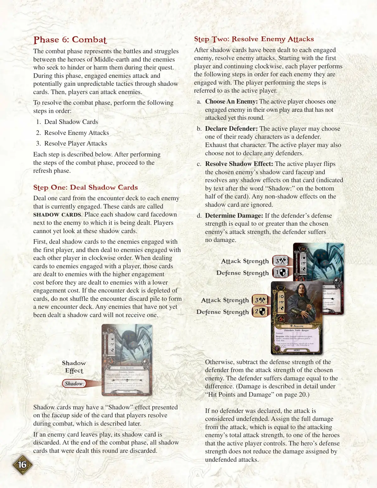
📝 第 16 页 AI 机翻对照（点击展开）
第6阶段：战斗
战斗阶段代表了中土世界英雄们与那些在他们探险过程中试图阻碍或伤害他们的敌人之间的战斗与斗争。
在此阶段，已交战的敌人会攻击，并可能通过暗影牌获得不可预测的策略。然后，玩家可以攻击敌人。
要解决战斗阶段，按顺序执行以下步骤：
1. 发放暗影牌
2. 解决敌人攻击
3. 解决玩家攻击
每个步骤将在下文描述。执行完战斗阶段的步骤后，进入刷新阶段。
第一步：发放暗影牌
从遭遇牌库向每个当前已交战的敌人发放一张牌。这些牌被称为暗影牌。将每张暗影牌面朝下放在其所发放的敌人旁边。玩家此时不能查看这些暗影牌。
首先，向与第一位玩家交战的敌人发放暗影牌，然后按顺时针方向向与其他每位玩家交战的敌人发放。当向与玩家交战的敌人发放牌时，先向参与成本较高的敌人发放，然后再向参与成本较低的敌人发放。如果遭遇牌库已无牌，不要将遭遇弃牌堆洗牌形成新的遭遇牌库。任何尚未获得暗影牌的敌人将不会收到一张。
暗影牌在其正面可能有一个"暗影"效果，玩家在战斗期间会解决此效果，这将在后文描述。
如果敌人牌离开游戏，其暗影牌被弃置。在战斗阶段结束时，本轮发放的所有暗影牌都被弃置。
第二步：解决敌人攻击
向每个已交战的敌人发放暗影牌后，解决敌人攻击。从第一位玩家开始，按顺时针方向，每位玩家按顺序为他们所交战的每个敌人执行以下步骤。执行这些步骤的玩家被称为主动玩家。
a. 选择一个敌人：主动玩家选择其自己游戏区域内一个本回合尚未攻击过的已交战敌人。
b. 宣布防御者：主动玩家可以选择其一个就绪角色作为防御者。使该角色疲劳。主动玩家也可以选择不宣布任何防御者。
c. 解决暗影效果：主动玩家将所选敌人的暗影牌翻至正面，并解决该牌上的任何暗影效果（由牌下半部分"暗影："一词后的文本表示）。暗影牌上的任何非暗影效果都被忽略。
d. 确定伤害：如果防御者的防御强度等于或大于所选敌人的攻击强度，则防御者不受到伤害。
否则，用敌人的攻击强度减去防御者的防御强度。
从所选敌人的攻击强度中减去防御者的防御强度。防御者受到的伤害等于这个差值。（伤害详情请参见第20页的"生命值与伤害"部分。）
如果没有宣布防御者，则该攻击被视为未受防御。将攻击的全部伤害（等于攻击敌人的总攻击强度）分配给当前玩家控制的一名英雄。英雄的防御强度不会减少未受防御攻击所造成的伤害。
生物。蜘蛛。
蜘蛛王
当 revealed 时：每位玩家必须选择并 exhaust 1 个他们控制的角色。
Shadow：防御玩家必须选择并 exhaust 1 个他们控制的角色。（如果该攻击未受防御，则为 2 个角色。）
eneMY
©2010 Middle-earth Enterprises ©2010 FFG
Illus. John Wigley
1/12
Shadow：D
h
Shadow
Effect
生物。蜘蛛。
蜘蛛王
当 revealed 时：每位玩家必须选择并 exhaust 1 个他们控制的角色。
Shadow：防御玩家必须选择并 exhaust 1 个他们控制的角色。（如果该攻击未受防御，则为 2 个角色。）
eneMY
©2010 Middle-earth Enterprises ©2010 FFG
Illus. John Wigley
1/12
攻击强度
防御强度
登丹人。贵族。游侠。
‰ ArAgorn
哨兵。
响应：在 Aragorn commit 到一个 quest 后，从他资源池中花费 1 个资源来 ready 他。
"我是阿拉贡，阿拉松之子；若我能以生或死拯救你们，我必会做。"——《魔戒：护戒使者》
HEro
Illus.
©2010 Middle-earth Enterprises ©2010 FFG
John Stanko
攻击强度
防御强度
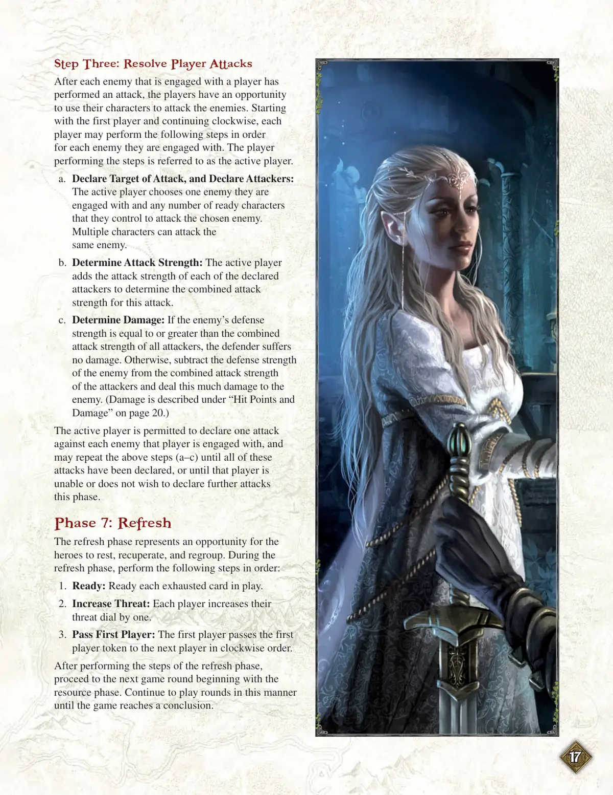
📝 第 17 页 AI 机翻对照（点击展开）
第三步：解决玩家攻击
在每个与玩家交战的敌人都执行完攻击后，玩家有机会使用他们的角色攻击敌人。从起始玩家开始，顺时针进行，每个玩家可以对他们交战的每个敌人按顺序执行以下步骤。执行这些步骤的玩家被称为主动玩家。
a. 宣布攻击目标并宣布攻击者：
主动玩家选择一个他们交战的敌人，以及他们控制的任意数量的就绪角色来攻击选定的敌人。多个角色可以攻击同一个敌人。
b. 确定攻击强度：
主动玩家将每个已宣布攻击者的攻击强度相加，以确定此次攻击的总攻击强度。
c. 确定伤害：
如果敌人的防御强度等于或大于所有攻击者的总攻击强度，则防御者不受到伤害。否则，从攻击者的总攻击强度中减去敌人的防御强度，并将此伤害值给予敌人。（伤害描述见第20页的"生命值与伤害"部分。）
主动玩家被允许对每个与其交战的敌人宣布一次攻击，并且可以重复上述步骤(a-c)，直到所有这些攻击都已宣布，或者该玩家无法或不愿在本阶段宣布更多攻击。
阶段7：刷新
刷新阶段代表英雄们休息、恢复和重组的机会。在刷新阶段，按顺序执行以下步骤：
- 就绪：使场上每张疲劳卡牌就绪。
2. 增加威胁：每个玩家将其威胁度盘增加一点。
3. 传递起始玩家：起始玩家将起始玩家标记传递给顺时针方向的下一个玩家。
执行完刷新阶段的步骤后，从资源阶段开始进入下一个游戏轮。以这种方式继续进行游戏轮，直到游戏结束。
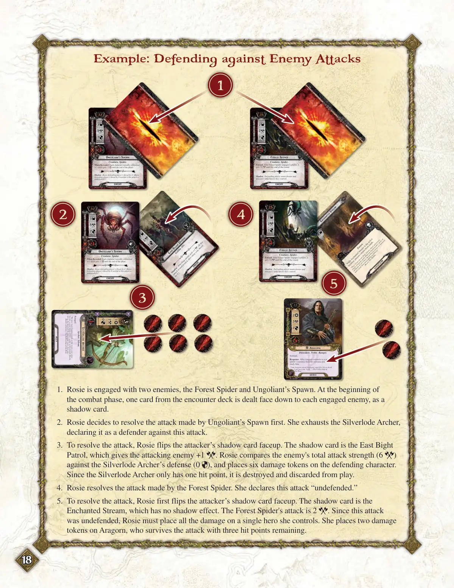
📝 第 18 页 AI 机翻对照（点击展开）
- 罗西与两个敌人交战，分别是森林蜘蛛和乌苟立安特的子孙。在战斗阶段开始时，从遭遇牌库中向每个交战的敌人发一张牌面朝下的牌，作为暗影牌。
- 罗西决定先解决乌苟立特的子孙发动的攻击。她 exhausted（耗尽）了银弓手，宣称其为此次攻击的防御者。
- 为了解决此次攻击，罗西将攻击者的暗影牌翻为牌面朝上。暗影牌是东湾巡逻队，它使攻击的敌人获得+1 Û。罗西将敌人的总攻击强度（6 Û）与银弓手的防御（0 Ú）进行比较，并在防御角色上放置六个伤害指示物。由于银弓手只有一点生命值，它被摧毁并从游戏中弃置。
- 罗西解决森林蜘蛛发动的攻击。她宣称此次攻击"未防御"。
- 为了解决此次攻击，罗西首先将攻击者的暗影牌翻为牌面朝上。暗影牌是魔法溪流，它没有暗影效果。森林蜘蛛的攻击是2 Û。由于此次攻击未防御，罗西必须将所有伤害放在她控制的单个英雄上。她在阿拉贡身上放置两个伤害指示物，阿拉贡在攻击后剩余三点生命值。
示例：防御敌人攻击
生物。蜘蛛。
ungoliant's Spawn
当揭示时：当前已投入任务的所有角色获得-1 Û，直到阶段结束。
暗影：提高防御玩家的威胁等级4。（如果此次攻击未防御，则改为提高防御玩家的威胁等级8。）
eneMY
©2010 Middle-earth Enterprises ©2010 FFG
插图：Andrew Olson
4/12
强制效果：当森林蜘蛛与一名玩家交战后，它获得+1 Û，直到轮结束。
暗影：防御玩家必须选择并弃置1张他们控制的附属牌。
生物。蜘蛛。
ForeSt Spider
eneMY
©2010 Middle-earth Enterprises ©2010 FFG
插图：Marco Caradonna
1/10
远程。
"自从许多天前我们看到一支大军兽人向北前往摩瑞亚，沿着山脚行进以来，我们一直在监视河流。"
–洛林的哈尔迪尔，《魔戒：护戒使者》
弓手。辛达族。
silvErlodE ArCHEr
盟友
插图
©2010 Middle-earth Enterprises ©2010 FFG
A.M. Sartor
暗影：攻击的敌人获得+1 Û。（如果此次攻击未防御，同时提高你的威胁等级3。）
哥布林。兽人。
eaSt bigHt patrol
eneMY
©2010 Middle-earth Enterprises ©2010 FFG
插图：Nikolay Stoyanov
5/10
enCHanted StreaM
森林。
地点
当魔法溪流是活跃地点时，玩家不能摸牌。
"那里有一条溪流，我知道，漆黑而湍急，横跨在小路上。你既不能饮用，也不能在其中沐浴；因为我听说它带有魔法，能引起强烈的困倦和遗忘。"
–比昂，《霍比特人》
©2010 Middle-earth Enterprises ©2010 FFG
插图：Ben Zweifel
13/14
努门诺尔人。贵族。游侠。
‰ 阿拉贡 (Aragorn)
哨兵。
响应：在阿拉贡投入一个任务后，从他资源池中花费1个资源来使他就绪。
"我是阿拉贡，阿拉松之子；若我能以生或死拯救你们，我必将做到。"——《魔戒：护戒使者》
英雄
插图：
©2010 Middle-earth Enterprises ©2010 FFG
John Stanko
生物。蜘蛛。
昂哥立安的子嗣 (Ungoliant's Spawn)
当揭示时：当前投入任务的所有角色获得-1直到回合结束。
暗影：提升防御玩家的威胁等级4点。（如果这次攻击未被防御，则改为提升防御玩家的威胁等级8点。）
敌人
©2010 Middle-earth Enterprises ©2010 FFG
插图：Andrew Olson
4/12
强制效果：在森林蜘蛛 (Forest Spider) 与一个玩家交战后，它获得+1直到轮结束。
暗影：防御玩家必须选择并弃置他们控制的1个附属物。
生物。蜘蛛。
森林蜘蛛 (Forest Spider)
敌人
©2010 Middle-earth Enterprises ©2010 FFG
插图：Marco Caradonna
1/10
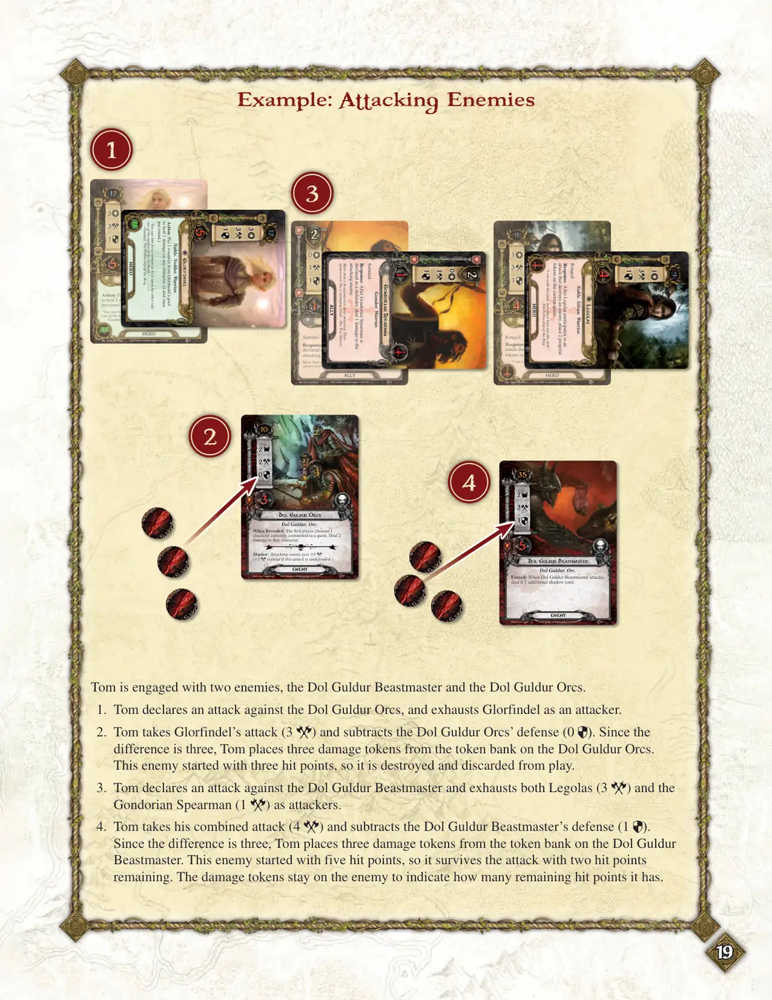
📝 第 19 页 AI 机翻对照（点击展开）
示例：攻击敌人
汤姆与两个敌人交战，分别是多古尔兽王和多古尔兽人。
- 汤姆宣布攻击多古尔兽人，并 Exhaust（耗尽）格洛芬德尔作为攻击者。
- 汤姆使用格洛芬德尔攻击（3 Û）并减去多古尔兽人的防御（0 Ú）。由于差值为三，汤姆从指示物库中取出三个伤害指示物放置在多古尔兽人上。这个敌人开始时有三点生命值，因此被摧毁并从游戏中弃置。
- 汤姆宣布攻击多古尔兽王，并 Exhaust（耗尽）了勒苟拉斯（3 Û）和刚铎矛兵（1 Û）作为攻击者。
- 汤姆使用他的组合攻击（4 Û）并减去多古尔兽王的防御（1 Ú）。由于差值为三，汤姆从指示物库中取出三个伤害指示物放置在多古尔兽王上。这个敌人开始时有五点生命值，因此它在攻击后幸存，还剩两点生命值。伤害指示物留在敌人身上，表示它还剩多少生命值。
贵族。诺多族。战士。
‰ glorfindEl
行动：支付1资源从格洛芬德尔的资源池中，治疗任意角色1点伤害。（每轮限一次。）
"你曾短暂地看见他在彼岸的模样：
初生者中的强者之一。"
–甘道夫，《魔戒：魔戒同盟》
HEro
插图
©2010 Middle-earth Enterprises ©2010 FFG
Katherine Dinger
贵族。诺多族。战士。
‰ glorfindEl
行动：支付1资源从格洛芬德尔的资源池中，治疗任意角色1点伤害。（每轮限一次。）
"你曾短暂地看见他在彼岸的模样：
初生者中的强者之一。"
–甘道夫，《魔戒：魔戒同盟》
HEro
插图
©2010 Middle-earth Enterprises ©2010 FFG
Katherine Dinger
强制：当多古尔兽王攻击时，额外获得1张暗影牌。
多古尔。兽人。
dol guldur beaStMaSter
eneMY
©2012 Middle-earth Enterprises ©2012 FFG
插图 David Lecossu
5/14
当揭示时：第一位玩家选择1个当前已投入任务的任意角色。对该角色造成2点伤害。
暗影：攻击敌人获得+1 Û。
（如果此攻击未被防御，则+3 Û。）
多古尔。兽人。
dol guldur orCS
eneMY
©2010 Middle-earth Enterprises ©2010 FFG
插图 Anna Christenson
1/14
哨兵。
响应：在刚铎矛兵被宣布为防御者后，对攻击敌人造成1点伤害。
那里集结了超过一千人。他们的长矛如同林立的森林。——《双塔奇兵》
刚铎。战士。
gondoriAn spEArmAn
盟友
插图
©2010 Middle-earth Enterprises ©2010 FFG
Winona Nelson
哨兵。
响应：在刚铎矛兵被宣布为防御者后，对攻击敌人造成1点伤害。
那里集结了超过一千人。他们的长矛如同林立的森林。——《双塔奇兵》
刚铎。战士。
gondoriAn spEArmAn
盟友
插图
©2010 Middle-earth Enterprises ©2010 FFG
Winona Nelson
贵族。希尔凡。战士。
‰ lEgolAs
远程。
响应：在莱戈拉斯参与了一次摧毁敌人的攻击后，在当前任务上放置2个进度指示物。
"我能走这条路，但其他人没有这个技能。"
–《魔戒：护戒使者》
英雄
插图
©2010 Middle Earth Enterprises ©2010 FFG
Magali Villeneuve
贵族。希尔凡。战士。
‰ lEgolAs
远程。
响应：在莱戈拉斯参与了一次摧毁敌人的攻击后，在当前任务上放置2个进度指示物。
"我能走这条路，但其他人没有这个技能。"
–《魔戒：护戒使者》
英雄
插图
©2010 Middle Earth Enterprises ©2010 FFG
Magali Villeneuve
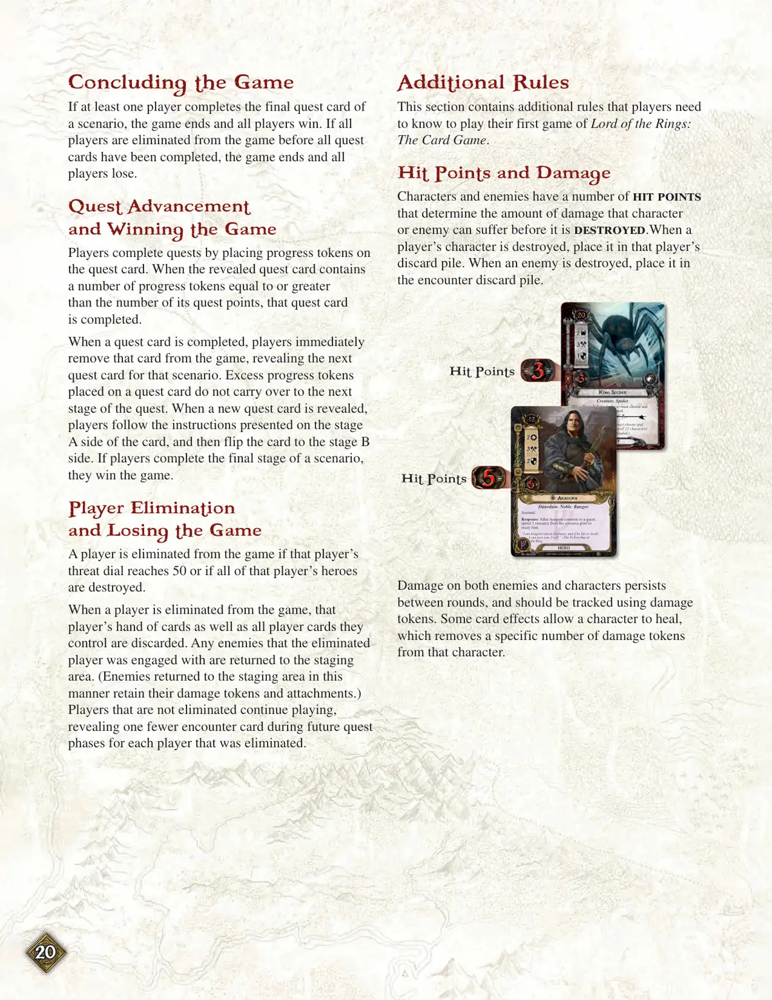
📝 第 20 页 AI 机翻对照（点击展开）
游戏结束
如果至少有一名玩家完成了某个场景的最后一张任务卡，游戏结束，所有玩家获胜。如果在所有任务卡完成前所有玩家都被淘汰，游戏结束，所有玩家失败。
任务推进
与赢得游戏
玩家通过在任务卡上放置进度指示物来完成任务。当展示的任务卡上的进度指示物数量等于或大于其任务点数时，该任务卡即完成。
当一张任务卡完成时，玩家立即将该卡从游戏中移除，为该场景展示下一张任务卡。放置在任务卡上的多余进度指示物不会 carry over 到任务的下一阶段。当展示新任务卡时，玩家遵循卡片上展示的 A 面阶段说明，然后将卡片翻到 B 面阶段。如果玩家完成了某个场景的最后阶段，他们就赢得了游戏。
玩家淘汰
与输掉游戏
如果玩家的威胁度盘达到 50，或者该玩家的所有英雄都被摧毁，则该玩家被淘汰出游戏。
当玩家被淘汰出游戏时，该玩家的手牌以及他们控制的所有玩家卡牌都将被弃置。被淘汰玩家正在交战的任何敌人都会返回到集结区。（以这种方式返回集结区的敌人保留其伤害指示物和附属物。）未被淘汰的玩家继续游戏，在未来的任务阶段，每淘汰一名玩家，就少展示一张遭遇卡。
附加规则
本节包含玩家需要了解的额外规则，以便他们玩好《魔戒：卡牌游戏》的第一局。
生命值与伤害
角色和敌人有生命值，决定了该角色或敌人在被摧毁前可以承受的伤害量。当玩家的角色被摧毁时，将其放入该玩家的弃牌堆。当敌人被摧毁时，将其放入遭遇弃牌堆。
敌人和角色上的伤害在回合之间持续存在，应使用伤害指示物进行追踪。一些卡牌效果允许角色治疗，即从该角色身上移除特定数量的伤害指示物。
生物。蜘蛛。
蜘蛛王
展示时：每位玩家必须选择并 exhaust 1 个他们控制的角色。
暗影：防御玩家必须选择并 exhaust 1 个他们控制的角色。（如果这次攻击未被防御，则为 2 个角色。）
eneMY
©2010 Middle-earth Enterprises ©2010 FFG
插图 John Wigley
1/12
生命值
登丹人。贵族。游侠。
‰ 阿拉贡
哨兵。
响应：在阿拉贡 commit 到任务后，从其资源池中花费 1 个资源来 ready 他。
"I am Aragorn son of Arathorn; and if by life or death
I can save you, I will." –The Fellowship of
the Ring
HEro
Illus.
©2010 Middle-earth Enterprises ©2010 FFG
John Stanko
生命值
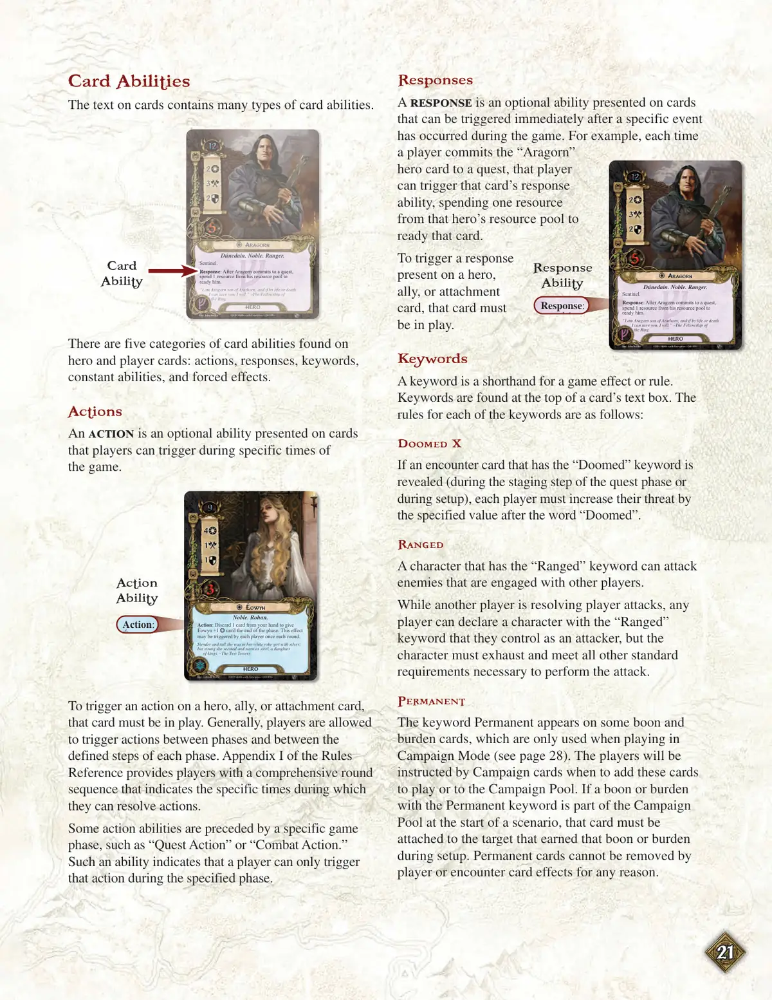
📝 第 21 页 AI 机翻对照（点击展开）
卡牌能力
卡牌上的文本包含多种类型的卡牌能力。
在英雄卡和玩家卡上发现的卡牌能力分为五类：行动、响应、关键词、常驻能力和强制效果。
行动
行动是卡牌上提供的一种可选能力，玩家可以在游戏中的特定时间触发。
要触发英雄、盟友或附属卡上的行动，该卡牌必须处于游戏中。通常，玩家被允许在各个阶段之间以及每个阶段的指定步骤之间触发行动。规则参考的附录I为玩家提供了完整的回合顺序，指示了他们可以解决行动的具体时间。
一些行动能力前有特定的游戏阶段，例如"探索行动"或"战斗行动"。这种能力表示玩家只能在指定阶段触发该行动。
响应
响应是卡牌上提供的一种可选能力，可以在游戏中的特定事件发生后立即触发。例如，每当玩家将"阿拉贡"英雄卡投入探索时，该玩家可以触发该卡牌的响应能力，从该英雄的资源池中花费1个资源来使该卡牌就绪。
要触发英雄、盟友或附属卡上的响应，该卡牌必须处于游戏中。
关键词
关键词是游戏效果或规则的简写。关键词出现在卡牌文本框的顶部。每个关键词的规则如下：
厄运X
如果一张具有"厄运"关键词的遭遇卡被揭示（在探索阶段的揭示步骤期间或设置期间），每个玩家必须将他们的威胁值增加"厄运"一词后指定的数值。
远程
具有"远程"关键词的角色可以攻击与其他玩家交战的敌人。
当其他玩家正在解决玩家攻击时，任何玩家都可以声明他们控制的具有"远程"关键词的角色作为攻击者，但该角色必须疲劳并满足执行攻击所需的所有其他标准要求。
永久
"永久"关键词出现在一些祝福和负担卡上，这些卡仅在战役模式（见第28页）中使用。战役卡会指示玩家何时将这些卡牌加入游戏或加入战役池。如果一个具有"永久"关键词的祝福或负担是场景开始时战役池的一部分，则该卡牌必须在设置期间附加到获得该祝福或负担的目标上。永久卡牌不能因任何原因被玩家或遭遇卡牌效果移除。
卡牌能力
杜内丹。贵族。游侠。
‰ 阿拉贡
哨兵。
响应：在阿拉贡投入探索后，从他资源池中花费1个资源使他就绪。
"I am Aragorn son of Arathorn; and if by life or death
I can save you, I will." –The Fellowship of
the Ring
英雄
插图
©2010 Middle-earth Enterprises ©2010 FFG
John Stanko
努门诺尔人。贵族。游侠。
守卫者
响应：在阿拉贡投入一个任务后，从他资源池中花费1个资源来使他就绪。
"I am Aragorn son of Arathorn; and if by life or death
I can save you, I will." –The Fellowship of
the Ring
英雄
插图
©2010 Middle-earth Enterprises ©2010 FFG
John Stanko
努门诺尔人。贵族。游侠。
守卫者
响应：在阿拉贡投入一个任务后，从他资源池中花费1个资源来使他就绪。
"I am Aragorn son of Arathorn; and if by life or death
I can save you, I will." –The Fellowship of
the Ring
英雄
插图
©2010 Middle-earth Enterprises ©2010 FFG
John Stanko
努门诺尔人。贵族。游侠。
守卫者
响应：在阿拉贡投入一个任务后，从他资源池中花费1个资源来使他就绪。
贵族。洛汗。
伊欧玟
行动：从你的手牌中弃掉1张卡牌，给伊欧玟+1直到回合结束。每名玩家每轮可触发此效果一次。
Slender and tall she was in her white robe girt with silver;
but strong she seemed and stern as steel, a daughter
of kings. –The Two Towers
英雄
插图
©2010 Middle-earth Enterprises ©2010 FFG
Gabrielle Portal
行动
能力
行动：弃掉1张手牌，给伊欧玟+1直到回合结束。每名玩家每轮可触发此效果一次。
努门诺尔人。贵族。游侠。
阿拉贡
守卫者
响应：在阿拉贡投入一个任务后，从他资源池中花费1个资源来使他就绪。
"I am Aragorn son of Arathorn; and if by life or death
I can save you, I will." –The Fellowship of
the Ring
英雄
插图
©2010 Middle-earth Enterprises ©2010 FFG
John Stanko
响应
能力
响应：弃掉1张手牌，给阿拉贡+1直到回合结束。每名玩家每轮可触发此效果一次。
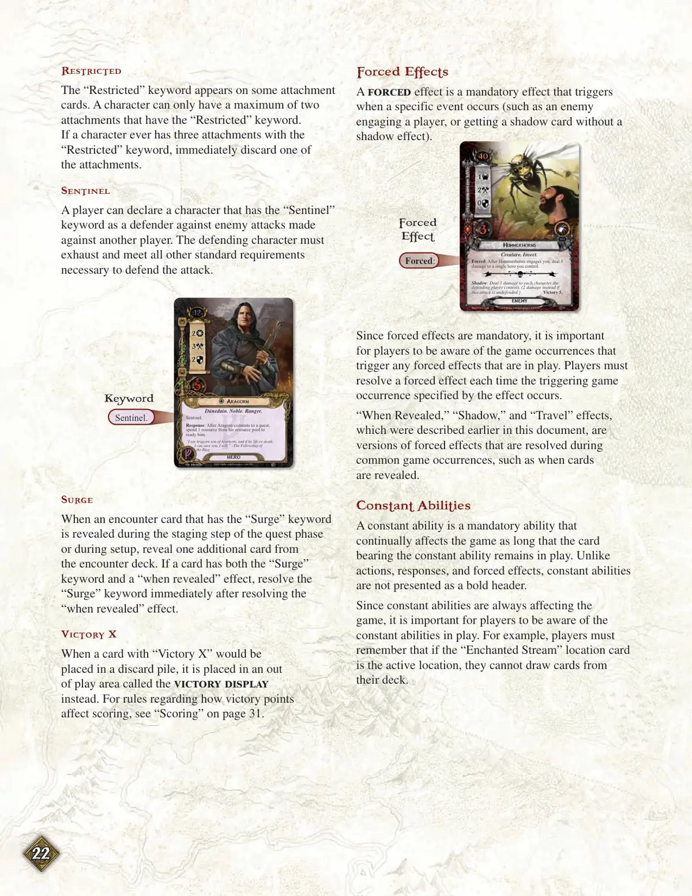
📝 第 22 页 AI 机翻对照（点击展开）
限制
"限制" 关键词出现在一些附属卡牌上。一个角色最多只能拥有两个带有"限制"关键词的附属。
如果一个角色拥有三个带有"限制"关键词的附属，立即弃掉其中一个附属。
哨兵
玩家可以将带有"哨兵"关键词的角色宣布为针对针对另一名玩家的敌方攻击的防御者。防御角色必须 exhausted（疲劳）并满足防御攻击所需的所有其他标准要求。
涌动
当在探索阶段的展示步骤期间或设置期间，一张带有"涌动"关键词的遭遇卡被揭示时，从遭遇牌库中再揭示一张卡。如果一张卡同时具有"涌动"关键词和"当揭示时"效果，在解析"当揭示时"效果后立即解析"涌动"关键词。
胜利 X
当一张带有"胜利 X"的卡牌将被放入弃牌堆时，它被放入一个称为胜利展示区的离场区域中。关于胜利点如何影响得分的规则，参见第31页的"得分"。
强制效果
强制效果是一种在特定事件发生时触发的强制性效果（例如敌人与玩家交战，或获得一张没有阴影效果的阴影卡）。
由于强制效果是强制性的，玩家需要注意触发任何在场的强制效果的游戏事件。每次效果指定的触发游戏事件发生时，玩家必须解析该强制效果。
本文前面描述的"当揭示时"、"阴影"和"旅行"效果是强制效果的版本，它们在常见游戏事件（如卡牌被揭示时）期间被解析。
恒定能力
恒定能力是一种强制性能力，只要带有恒定能力的卡牌保持在场上，它就会持续影响游戏。与行动、响应和强制效果不同，恒定能力不以粗体标题形式呈现。
由于恒定能力始终影响游戏，玩家需要注意在场的恒定能力。例如，玩家必须记住，如果"魔溪"地点卡是当前地点，他们不能从自己的牌库中摸牌。
生物。昆虫。
大黄蜂
强制：在大黄蜂与你交战后，对你控制的单个英雄造成5点伤害。
阴影：对防御玩家控制的每个角色造成1点伤害。（如果此攻击未被防御，则改为2点伤害。）
胜利5。
敌人
©2010 Middle-earth Enterprises ©2010 FFG
插图：David Lecossu
3/12
强制
效果
强制：A
d
t
杜内丹。贵族。游侠。
‰ 阿拉贡
哨兵。
响应：在阿拉贡投入探索后，从他资源池中花费1个资源来使他 ready（就绪）。
"我是阿拉贡，阿拉松之子；若能以生或死拯救你们，我必尽力。"——《魔戒：护戒使者》
HEro
插图
©2010 Middle-earth Enterprises ©2010 FFG
John Stanko
关键词
哨兵。
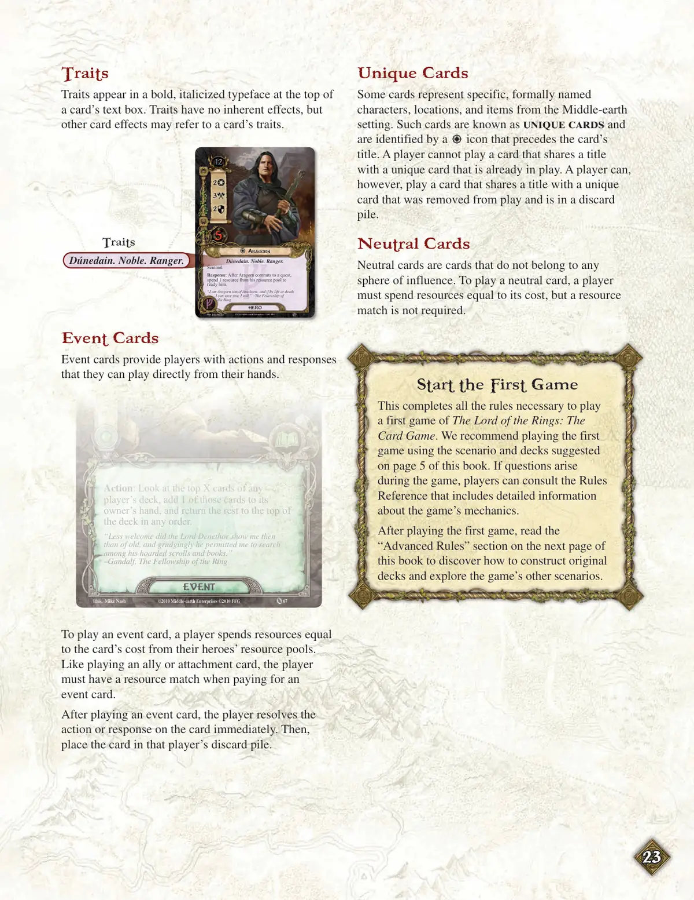
📝 第 23 页 AI 机翻对照（点击展开）
特性
特性以粗体斜体字型出现在卡牌文本框的顶部。特性本身没有固有效果，但其他卡牌效果可能会引用卡牌的特性。
事件卡牌
事件卡牌为玩家提供行动和响应，玩家可以直接从手牌中打出。
要打出事件卡牌，玩家需要从其英雄的资源池中花费等同于卡牌费用的资源。如同打出盟友或附属卡牌，玩家在支付事件卡牌费用时必须拥有资源匹配。
打出事件卡牌后，玩家立即解析卡牌上的行动或响应。然后，将卡牌放入该玩家的弃牌堆。
唯一卡牌
某些卡牌代表中土世界设定中特定的、正式命名的角色、地点和物品。这类卡牌被称为唯一卡牌，通过卡牌标题前的 ‰ 图标来标识。玩家不能打出与已在场上唯一卡牌共享标题的卡牌。然而，玩家可以打出与已从场上移除且位于弃牌堆中的唯一卡牌共享标题的卡牌。
中立卡牌
中立卡牌是不属于任何影响力阵营的卡牌。要打出中立卡牌，玩家必须花费等同于其费用的资源，但不需要资源匹配。
开始第一局游戏
这完成了《魔戒：卡牌游戏》第一局游戏所需的所有规则。我们建议使用本书第5页建议的场景和牌组进行第一局游戏。如果在游戏过程中出现疑问，玩家可以查阅规则参考，其中包含有关游戏机制的详细信息。
进行第一局游戏后，阅读本书下一页的"进阶规则"部分，了解如何构建原创牌组并探索游戏的其他场景。
行动：查看任意玩家牌库顶部的X张牌，将其中1张牌加入其所有者的手牌，并将其余牌以任意顺序放回牌库顶部。
"那时，摄政王迪耐瑟对我的欢迎比以往任何时候都要冷淡，他不情愿地允许我在他珍藏的卷轴和书籍中搜寻。"
——甘道夫，《魔戒：双塔奇兵》
事件
插图
©2010 Middle-earth Enterprises ©2010 FFG
迈克·纳什
事件
©2010 Middle-earth Enterprises ©2010 FFG
登丹人。贵族。游侠。
‰ 阿拉贡
哨兵。
响应：当阿拉贡参与探索后，从他的资源池中花费1资源使其就绪。
"我是阿拉松之子阿拉贡；如果我能通过生或死拯救你们，我就会拯救你们。"——《魔戒：魔戒同盟》
英雄
插图
©2010 Middle-earth Enterprises ©2010 FFG
约翰·斯坦科
特性
登丹人。贵族。游侠。
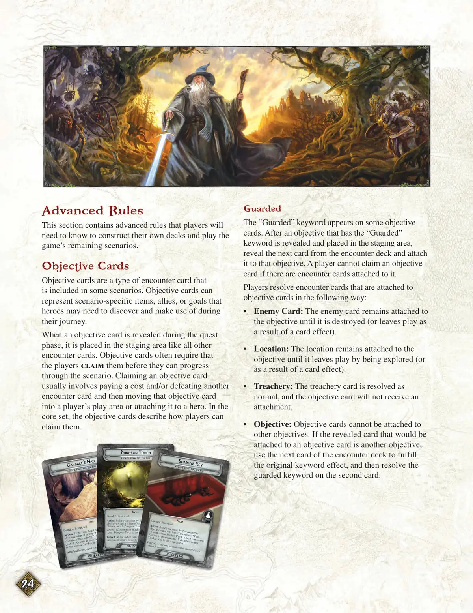
📝 第 24 页 AI 机翻对照（点击展开）
高级规则
本节包含高级规则，玩家需要了解这些规则来构建自己的牌组并游玩游戏中的剩余场景。
目标卡牌
目标卡牌是一种遭遇卡牌，包含在某些场景中。目标卡牌可以代表场景特定的物品、盟友或目标，英雄在旅途中可能需要发现并利用它们。
当目标卡牌在探索阶段被揭示时，它像所有其他遭遇卡牌一样被放置在集结区。目标卡牌通常要求玩家在推进场景前先声明它们。声明目标卡牌通常涉及支付费用和/或击败另一张遭遇卡，然后将该目标卡牌移入玩家的游戏区域或附加到一名英雄身上。在基础盒中，目标卡牌描述了玩家如何声明它们。
被守护
"被守护"关键词出现在某些目标卡牌上。当一张带有"被守护"关键词的目标卡牌被揭示并放置在集结区后，从遭遇牌库中揭示下一张卡牌并将其附加到该目标上。如果有遭遇卡牌附加到目标卡牌上，玩家无法声明该目标卡牌。玩家按以下方式处理附加到目标卡牌上的遭遇卡牌：
• 敌人卡牌：敌人卡牌保持附加到目标上，直到它被摧毁（或因卡牌效果而离开游戏）。
• 地点：地点保持附加到目标上，直到它被探索而离开游戏（或因卡牌效果而离开游戏）。
• 奸诈卡牌：奸诈卡牌按正常方式结算，目标卡牌不会获得附加物。
• 目标卡牌：目标卡牌不能附加到其他目标卡牌上。如果将要附加到目标卡牌上的揭示卡是另一张目标卡牌，使用遭遇牌库的下一张卡牌来完成原始关键词效果，然后结算第二张卡牌上的被守护关键词。
甘道夫的地图
目标
物品。
被守护。受限。
行动：当此目标没有遭遇卡时，提高你的威胁度2点来声明此目标。声明后，将甘道夫的地图附加到你控制的一名英雄身上。（算作一个附加物。如果被分离，将甘道夫的地图返回集结区。）
附加的英雄不能攻击或防御。
逃离多古尔都
©2010 Middle-earth Enterprises ©2010 FFG
插图：Mike Nash
13/15
被守护。受限。
行动：当此目标没有遭遇卡时，提高你的威胁度2点来声明此目标。声明后，将地牢火把附加到你控制的一名英雄身上。（算作一个附加物。如果被分离，将地牢火把返回集结区。）
强制效果：在每个回合结束时，提高附加英雄的控制者的威胁度2点。
目标
物品。
地牢火把
逃离多古尔都
<!--page:14/15-->
受保护的。限制的。
行动：当此目标没有遭遇卡时，提高你的威胁度2点以宣称此目标。
宣称后，将暗影钥匙（Shadow Key）附加到你控制的一名英雄身上。
（视为一个附件。如果被分离，将暗影钥匙返回到集结区。）
强制效果：在每个回合结束时，附加的英雄受到1点伤害。
目标
物品
暗影钥匙（SHadow KeY）
<!--page:15/15-->
逃离多古尔都（ESCAPE FROM DOL GULDUR）
©2010 Middle-earth Enterprises ©2010 FFG
Illus. Nicholas Cloister
15/15
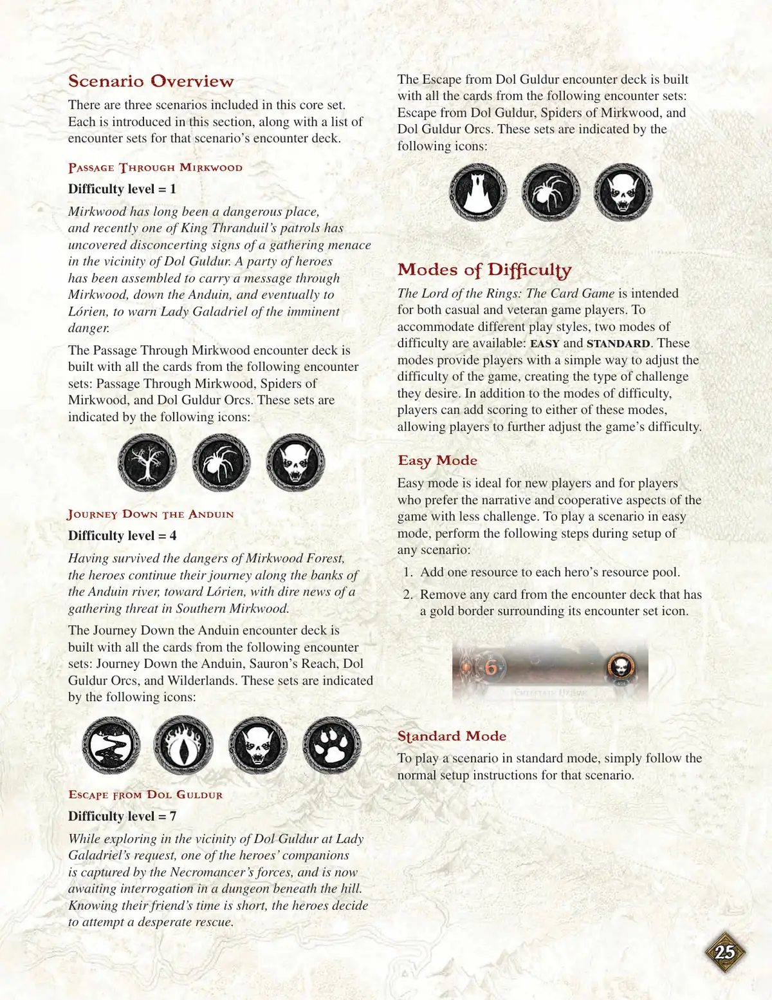
📝 第 25 页 AI 机翻对照（点击展开）
场景概述
本核心套装包含三个场景。
本节将介绍每个场景，并列出该场景遭遇牌库所需的遭遇套牌组。
穿越幽暗密林
难度等级 = 1
幽暗密林长期以来一直是个危险的地方，最近，瑟兰督伊国王的一支巡逻队在多尔哥多的附近发现了令人不安的聚集威胁的迹象。一群英雄被集结起来，要穿过幽暗密林，沿安都因河而下，最终到达罗瑞恩，向加拉德瑞尔女士警告即将到来的危险。
《穿越幽暗密林》遭遇牌库由以下遭遇套牌组中的所有卡牌组成：穿越幽暗密林、幽暗密林蜘蛛、多尔哥多兽人。这些套牌组由以下图标表示：
沿安都因河而下
难度等级 = 4
在经历了幽暗密林的危险后，英雄们继续沿着安都因河岸向罗瑞恩前进，带着南方幽暗密林中聚集威胁的可怕消息。
《沿安都因河而下》遭遇牌库由以下遭遇套牌组中的所有卡牌组成：沿安都因河而下、索隆的触角、多尔哥多兽人、荒野之地。这些套牌组由以下图标表示：
逃离多尔哥多
难度等级 = 7
应加拉德瑞尔女士的要求，英雄们在多尔哥多附近探索时，他们中一位英雄的同伴被死灵法师的部队俘虏，现在正在山下的地牢中等待审讯。知道他们的朋友时间不多了，英雄们决定尝试一次绝望的救援。
《逃离多尔哥多》遭遇牌库由以下遭遇套牌组中的所有卡牌组成：逃离多尔哥多、幽暗密林蜘蛛、多尔哥多兽人。这些套牌组由以下图标表示：
难度模式
《魔戒：卡牌游戏》旨在满足休闲玩家和资深游戏玩家的需求。为了适应不同的游戏风格，提供了两种难度模式：简单模式和标准模式。这些模式为玩家提供了一种简单的方式来调整游戏难度，创造他们期望的挑战类型。除了难度模式外，玩家还可以在任一模式中添加计分，从而进一步调整游戏难度。
简单模式
简单模式非常适合新玩家以及那些更喜欢游戏的叙事和合作方面且挑战较少的玩家。要在简单模式下进行游戏，在任何场景的设置过程中执行以下步骤：
- 为每位英雄的资源池添加一个资源。
- 从遭遇牌库中移除任何在其遭遇套牌组图标周围有金色边框的卡牌。
标准模式
要在标准模式下进行游戏，只需遵循
该场景的标准设置说明。
多古尔（Dol Guldur）。兽人。
酋长乌弗萨克（CHieFtain uFtHaK）
4/14
4/14
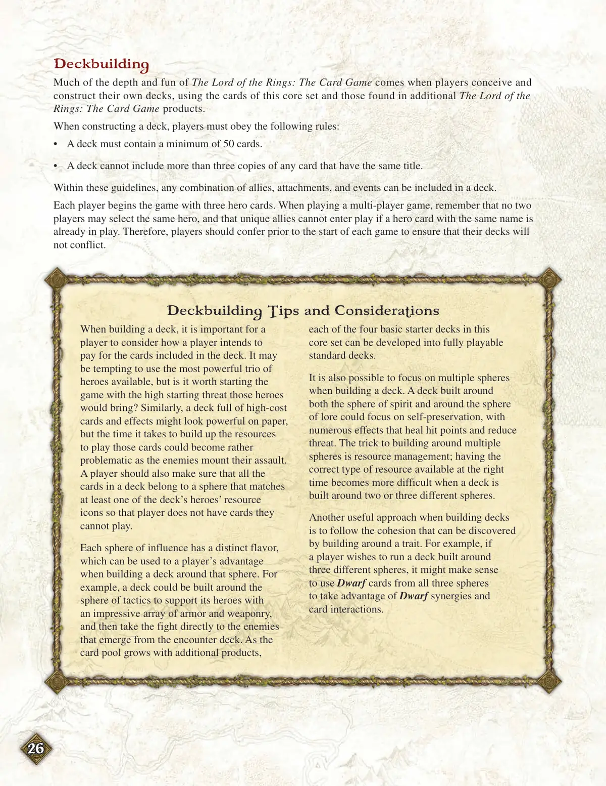
📝 第 26 页 AI 机翻对照（点击展开）
牌库构筑
《魔戒：卡牌游戏》的大部分深度和乐趣来自于玩家构思和构筑自己的牌库，使用这个核心盒中的卡牌以及在其他《魔戒：卡牌游戏》产品中找到的卡牌。
在构筑牌库时，玩家必须遵守以下规则：
• 牌库必须包含至少50张卡牌。
• 牌库不能包含超过三张相同标题的卡牌。
在这些指导原则下，任何组合的盟友、附属物和事件都可以包含在牌库中。
每位玩家开始游戏时拥有三张英雄卡牌。当进行多人游戏时，请记住没有两位玩家可以选择相同的英雄，并且如果同名英雄卡牌已经在游戏中，则独特的盟友无法进入游戏。因此，玩家应在每局游戏开始前进行协商，以确保他们的牌库不会产生冲突。
牌库构筑技巧与考虑因素
在构筑牌库时，玩家考虑如何支付牌库中包含的卡牌费用是很重要的。使用最强大的三位英雄组合可能很诱人，但这些英雄带来的高初始威胁值是否值得在游戏开始时就承担？同样，一个充满高成本卡牌和效果的牌库在纸面上看起来可能很强大，但随着敌人发起攻击，积累资源来打出这些卡牌所需的时间可能会变得相当成问题。
玩家还应确保牌库中的所有卡牌都属于一个至少与牌库中某位英雄的资源图标相匹配的领域，这样玩家就不会拥有无法打出的卡牌。
每个影响力领域都有独特的风格，当围绕该领域构筑牌库时，玩家可以利用这一点。例如，可以围绕战术领域构筑牌库，用令人印象深刻的盔甲和武器组合来支持其英雄，然后将战斗直接引向从遭遇牌库中出现的敌人。随着卡牌池随着附加产品而增长，这个核心盒中的四个基础起始牌库都可以发展为完全可玩的标准牌库。
在构筑牌库时也可以专注于多个领域。一个同时围绕精神和智慧领域构筑的牌库可以专注于自我保护，拥有许多治疗生命值和降低威胁的效果。围绕多个领域构筑的技巧在于资源管理；当牌库围绕两个或三个不同的领域构筑时，在正确的时间拥有正确类型的资源变得更加困难。
构筑牌库时另一个有用的方法是遵循围绕某个特质可以发现的连贯性。例如，如果玩家希望运行一个围绕
三个不同的领域，使用所有三个领域的矮人卡牌可能是明智之举，以利用矮人的协同效应和卡牌互动。
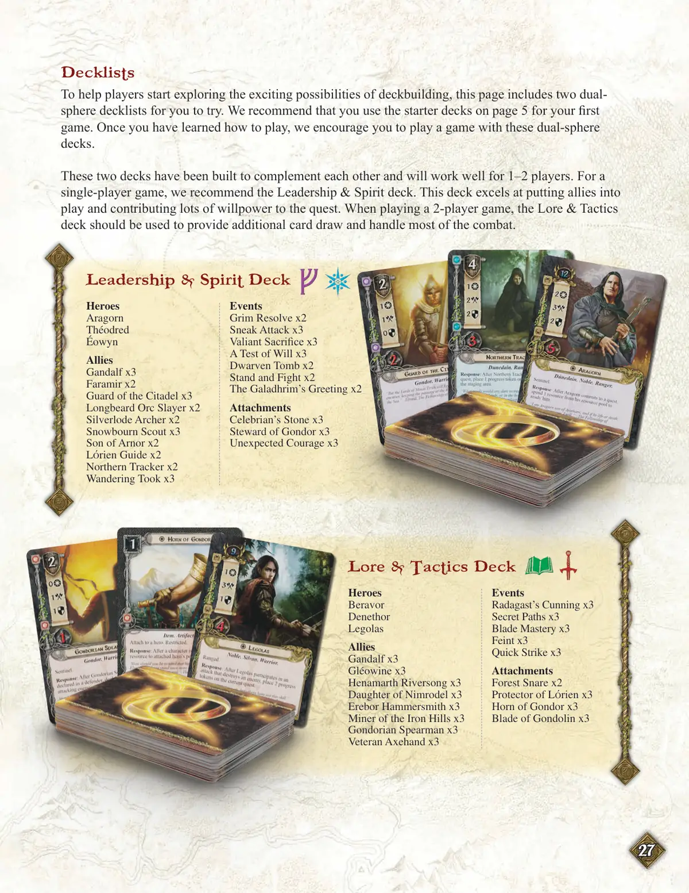
📝 第 27 页 AI 机翻对照（点击展开）
英雄
阿拉贡（Aragorn）
希奥顿雷德（Théodred）
伊欧玟（Éowyn）
盟友
甘道夫 x3
法拉米尔 x2
白城卫士 x3
长斧兽人杀手 x2
银弓射手 x2
雪河斥候 x3
阿尔诺之子 x2
罗瑞安向导 x2
北方追踪者 x2
游历的图克 x3
事件
坚定决心 x2
突袭 x3
英勇牺牲 x3
意志的考验 x3
矮人墓穴 x2
坚守战斗 x2
罗瑞安的问候 x2
附属牌
凯勒布理安之石 x3
刚铎摄政王 x3
意外勇气 x3
领导与精神牌库
牌库列表
为帮助玩家开始探索构筑牌库的令人兴奋的可能性，本页包含两张双色系牌库供您尝试。我们建议您在第一局游戏中使用第5页的起始牌库。一旦您学会了如何游戏，我们鼓励您使用这两张双色系牌库进行游戏。
这两张牌库被设计为相互补充，适合1-2名玩家。对于单人游戏，我们推荐领导与精神牌库。这张牌库擅长将盟友投入游戏并为任务提供大量意志力。在进行2人游戏时，应使用学识与战术牌库来提供额外的抽牌并处理大部分战斗。
学识与战术牌库
英雄
贝拉维尔（Beravor）
迪耐瑟（Denethor）
莱戈拉斯（Legolas）
盟友
甘道夫 x3
格洛温（Gléowine） x3
亨纳玛斯·河歌（Henamarth Riversong） x3
宁朵戴尔之女（Daughter of Nimrodel） x3
孤山铁匠（Erebor Hammersmith） x3
铁山矿工（Miner of the Iron Hills） x3
刚铎矛兵（Gondorian Spearman） x3
老兵斧手（Veteran Axehand） x3
事件
拉达加斯特的狡猾 x3
秘密路径 x3
刀刃精通 x3
佯攻 x3
快速打击 x3
附属牌
森林陷阱 x2
罗瑞安守护者 x3
刚铎号角 x3
刚多林之刃 x3
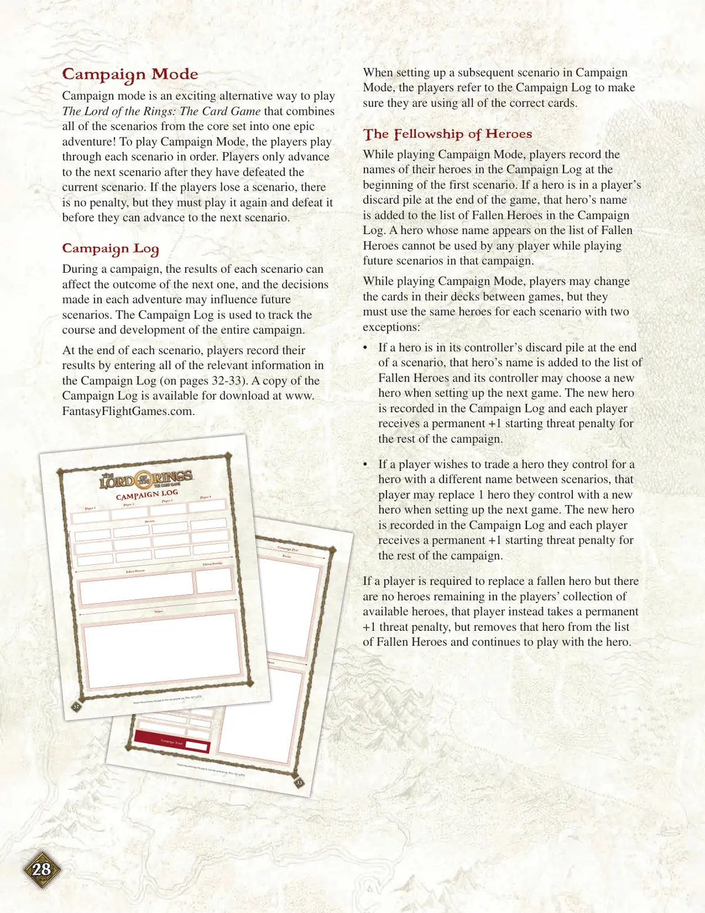
📝 第 28 页 AI 机翻对照（点击展开）
已完成场景
分数
场景名称
战役池
恩惠
负担
战役总分：
玩家可以复印此页供个人使用。TM lic. SZC to FFG
玩家 1
陨落英雄
备注
玩家 2
威胁惩罚
玩家 3
玩家 4
英雄
战役记录
英雄
玩家可以复印此页供个人使用。TM lic. SZC to FFG
TM
战役模式
战役模式是一种令人兴奋的《指环王：卡牌游戏》替代玩法，它将核心集中的所有场景组合成一个史诗般的冒险！要玩战役模式，玩家按顺序进行每个场景。玩家只有在击败当前场景后才能进入下一个场景。如果玩家输掉一个场景，没有惩罚，但他们必须再次玩并击败它，然后才能进入下一个场景。
战役记录
在战役期间，每个场景的结果可能会影响下一个场景的结果，并且在每个冒险中做出的决定可能会影响未来的场景。战役记录用于追踪整个战役的过程和发展。
在每个场景结束时，玩家通过在战役记录（第32-33页）中输入所有相关信息来记录他们的结果。战役记录的副本可在 www.FantasyFlightGames.com 下载。
在战役模式下设置后续场景时，玩家参考战役记录以确保他们使用所有正确的卡牌。
英雄团队
在玩战役模式时，玩家在第一个场景开始时在战役记录中记录他们英雄的名字。如果一个英雄在游戏结束时在玩家的弃牌堆中，该英雄的名字会被添加到战役记录中的陨落英雄列表中。出现在陨落英雄列表中的英雄不能在该战役的未来场景中被任何玩家使用。
在玩战役模式时，玩家可以在游戏之间更换他们牌库中的卡牌，但他们必须使用相同的英雄，有两个例外：
• 如果一个英雄在场景结束时在其控制者的弃牌堆中，该英雄的名字会被添加到陨落英雄列表中，其控制者在设置下一个游戏时可以选择一个新英雄。新英雄被记录在战役记录中，每个玩家在剩余的战役中获得永久+1起始威胁惩罚。
• 如果一个玩家希望在场景之间将其控制的一个英雄与不同名字的英雄交换，该玩家可以在设置下一个游戏时用新英雄替换其控制的1个英雄。新英雄被记录在战役记录中，每个玩家在剩余的战役中获得永久+1起始威胁惩罚。
如果一个玩家需要替换一个陨落的英雄但没有
如果玩家可用的英雄收藏中不再有英雄，该玩家则获得一个永久的+1威胁惩罚，但将该英雄从堕落英雄列表中移除，并继续使用该英雄进行游戏。
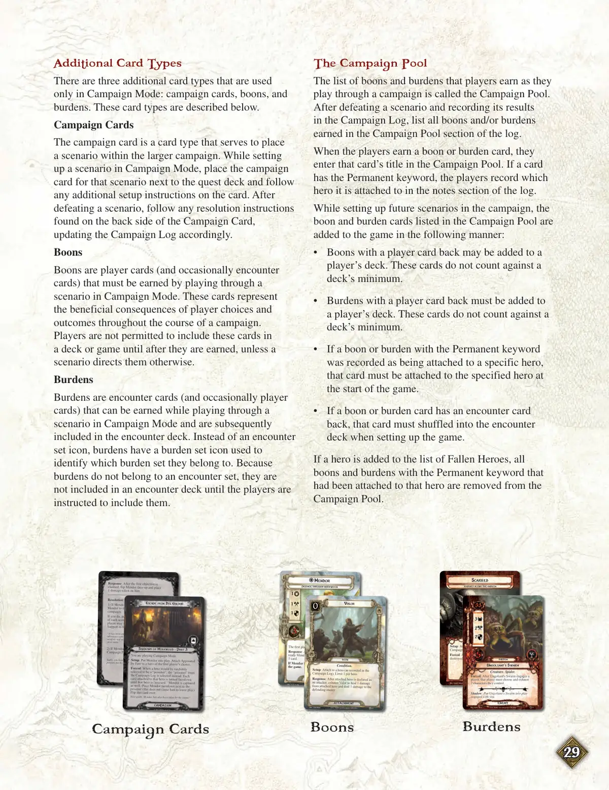
📝 第 29 页 AI 机翻对照（点击展开）
额外卡牌类型
有三种额外卡牌类型仅在战役模式中使用：战役卡牌、恩惠和负担。这些卡牌类型描述如下。
战役卡牌
战役卡牌是一种用于将单个场景放置在更大战役中的卡牌类型。在战役模式中设置场景时，将该场景的战役卡牌放置在任务牌库旁边，并遵循卡牌上的任何额外设置说明。在击败一个场景后，遵循战役卡牌背面的任何结算说明，并相应地更新战役日志。
恩惠
恩惠是玩家卡牌（偶尔是遭遇卡牌），玩家必须在战役模式中通过游玩一个场景来获得这些卡牌。这些卡牌代表在整个战役过程中玩家选择和结果带来的有益后果。除非场景有其他指示，否则玩家不允许在获得这些卡牌之前将其加入牌组或游戏中。
负担
负担是遭遇卡牌（偶尔是玩家卡牌），玩家可以在战役模式中通过游玩一个场景获得这些卡牌，随后将其加入遭遇牌库。负担没有遭遇套牌图标，而是有一个负担套牌图标，用于标识它们属于哪个负担套牌。因为负担不属于任何遭遇套牌，所以直到玩家被指示加入时，它们才会被包含在遭遇牌库中。
战役池
玩家在游玩战役过程中获得的恩惠和负担列表被称为战役池。在击败一个场景并将其结果记录在战役日志中后，将所有获得并在战役池部分列出的恩惠和/或负担记录在日志中。
当玩家获得恩惠或负担卡牌时，他们将该卡牌的标题输入战役池。如果一张卡牌有"永久"关键词，玩家在日志的备注部分记录它附加到哪个英雄上。
在战役中设置未来场景时，战役池中列出的恩惠和负担卡牌按以下方式加入游戏：
• 有玩家卡牌背面的恩惠可以加入玩家的牌组。这些卡牌不计入牌组最低数量限制。
• 有玩家卡牌背面的负担必须加入玩家的牌组。这些卡牌不计入牌组最低数量限制。
• 如果记录为附加到特定英雄的恩惠或负担有"永久"关键词，则该卡牌必须在游戏开始时附加到指定的英雄上。
• 如果恩惠或负担卡牌有遭遇卡牌背面，则在设置游戏时必须将其洗入遭遇牌库。
如果一个英雄被加入陨落英雄列表，所有曾附加到该英雄的带有"永久"关键词的恩惠和负担都将被移除。
<!--page:N-->
战牌池
恩赐
目标-盟友
‰门多尔
穿越幽暗密林
辛达族。侦察员。
第一位玩家获得门多尔的控制权。
响应：在一张任务卡被打败后，
重置门多尔。然后，每位玩家摸1张牌。
如果门多尔回离场，将他移出游戏。
恩赐
© 2021 Middle-earth Enterprises © 2021 FFG
插图：Cris Griffin
设置：附加到一个英雄（如战役日志中记录）。每名英雄限1张。
响应：在附加英雄被宣布为攻击者后，耗尽英勇来治疗附加英雄1点伤害，并对防御的敌人造成1点伤害。
附件
状态。
英勇
恩赐
© 2021 Middle-earth Enterprises © 2021 FFG
插图：Chris Rhan
重负
目标
设置：附加到一个英雄（如战役日志中记录）。每名英雄限1张。
强制：当你控制的一个角色被摧毁时，你的威胁等级提升1。
疤痕
沿着安都因河的旅程
重负
© 2021 Middle-earth Enterprises © 2021 FFG
插图：Magali Villeneuve
生物。蜘蛛。
乌苟立安特的蜂群
强制：当乌苟立安特的蜂群与一位玩家交战后，该玩家必须选择并重置他们控制的2个角色。
暗影：将乌苟立安特的蜂群置入场中与你交战。
重负
© 2021 Middle-earth Enterprises © 2021 FFG
插图：Andrew Ryan
战役卡
响应：在第一个目标被宣称后，将门多尔翻面，并在他身上放置1个伤害指示物。
结算：确定以下选项之一：
1) 如果门多尔回在场上，你可以将门多尔添加到你下一场战役的战牌池中。
如果你这样做，在该战役的每个场景开始时将门多尔置入场中。在该战役期间，每位玩家可以在他们的牌库中包含1份门多尔的支援牌。
"与你们一同经历如此危险的冒险是我的荣幸，朋友们，"门多说，"如果你们再次需要我的帮助，我很乐意再次与你们同行。"
2) 如果门多尔回不在场上，不要为你下一场战役调整战牌池。
悲伤地，你将门多尔的遗体带回加拉德瑞尔，准备让他西渡。
幽暗密林之影 - 第3部分
战役
逃离多古尔都
你正在游玩战役模式。
设置：将门多尔回置入场中。将命运指定附加到第一位玩家选择的一名英雄上。
强制：当一名英雄将被随机选为"囚犯"时，从战役日志中选择"囚犯"代替。附加到该英雄的每张牌都被面朝下放置，直到该英雄被"解救"。门多尔回也被俘虏。将门多尔回面朝下放置在囚犯旁边（这不会导致他离场）。
将这张牌翻面。
你的向导门多尔回也被敌人抓走了！
© 2021 Middle-earth Enterprises © 2021 FFG
插图：Ben Zweifel
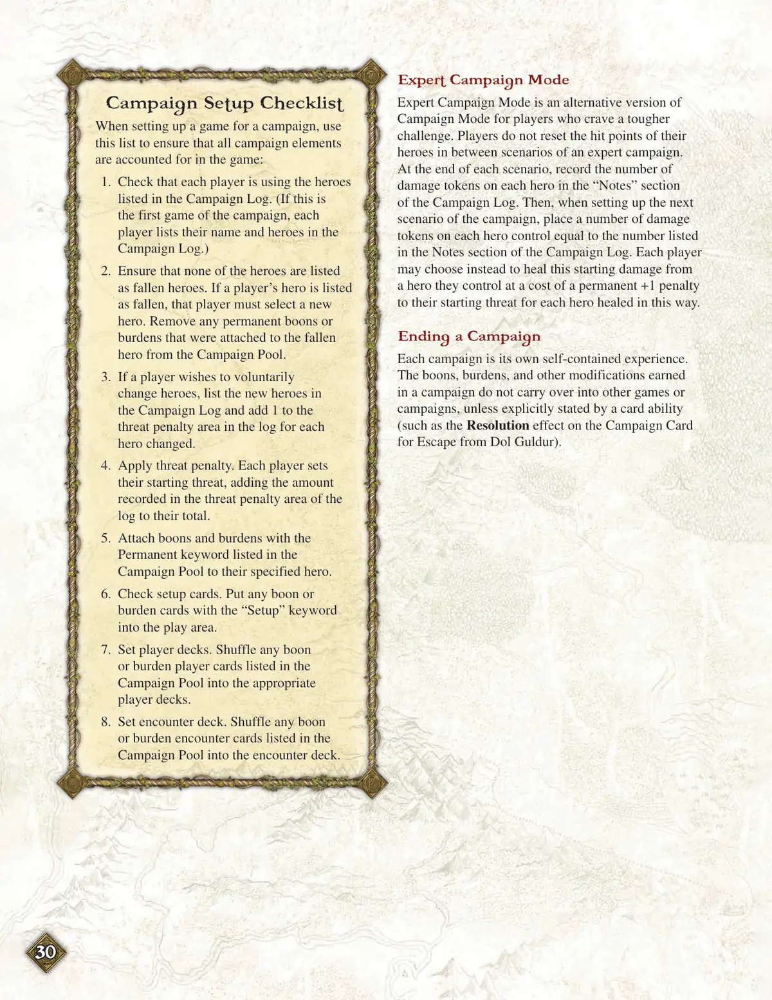
📝 第 30 页 AI 机翻对照（点击展开）
专家战役模式
专家战役模式是战役模式的替代版本，适合渴望更大挑战的玩家。在专家战役的各个场景之间，玩家不会重置其英雄的生命值。在每个场景结束时，记录每个英雄上的伤害指示物数量，记录在战役日志的"备注"部分。然后，在设置战役的下一个场景时，在每个英雄控制面板上放置与战役日志"备注"部分所列数量相等的伤害指示物。每位玩家可以选择以支付永久+1起始威胁值惩罚的代价，治愈他们控制的一名英雄的这种起始伤害，每以这种方式治愈一名英雄，起始威胁值惩罚就增加1。
结束战役
每个战役都是其独立的完整体验。在战役中获得的好处、负担和其他修改不会带入其他游戏或战役，除非卡牌能力明确说明（例如逃离多古尔都战役卡上的结算效果）。
战役设置清单
在为战役设置游戏时，使用此清单确保所有战役元素都已包含在游戏中：
1. 检查每位玩家是否使用战役日志中列出的英雄。（如果这是战役的第一场游戏，每位玩家在战役日志中列出他们的名字和英雄。）
2. 确保没有英雄被列为阵亡英雄。如果玩家的英雄被列为阵亡，该玩家必须选择一名新英雄。从战役池中移除任何附加在阵亡英雄上的永久好处或负担。
3. 如果玩家希望自愿更换英雄，在战役日志中列出新英雄，并为每名更换的英雄在威胁惩罚区域加1。
- 应用威胁惩罚。每位玩家设置他们的起始威胁值，将日志中威胁惩罚区域记录的数值加到他们的总数上。
5. 将战役池中带有"永久"关键词的好处和负担附加到指定的英雄上。
- 检查设置卡。将带有"设置"关键词的好处或负担卡放入游戏区域。
- 设置玩家牌库。将战役池中列出的任何好处或负担玩家牌洗入相应的玩家牌库中。
- 设置遭遇牌库。将战役池中列出的任何好处或负担遭遇牌洗入遭遇牌库中。
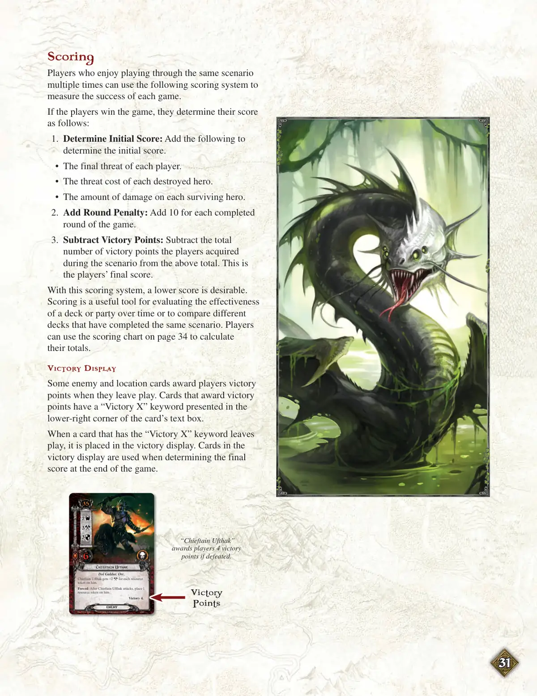
📝 第 31 页 AI 机翻对照（点击展开）
计分
喜欢多次进行同一场景的玩家可以使用以下计分系统来衡量每局游戏的成果。
如果玩家赢得了游戏，他们按以下方式确定自己的分数：
1. 确定初始分数：将以下各项相加以确定初始分数。
• 每位玩家的最终威胁值。
• 每个被摧毁英雄的威胁成本。
• 每个幸存英雄上的伤害值。
- 回合惩罚：为游戏中的每个完整回合加10分。
3. 减去胜利点：从上述总分中减去玩家在场景中获得的总胜利点数。这就是玩家的最终分数。
使用这个计分系统，分数越低越好。
计分是评估牌组或队伍随时间推移的有效性，或比较已完成同一场景的不同牌组的有用工具。玩家可以使用第34页的计分表来计算他们的总分。
胜利展示
当某些敌人和地点牌离开游戏时，会给予玩家胜利点。给予胜利点的牌在牌面文本框的右下角有"胜利X"关键词。
当带有"胜利X"关键词的牌离开游戏时，它被放入胜利展示区。游戏结束时，在确定最终分数时会使用胜利展示区的牌。
酋长乌夫萨克（Ufthak）身上每有一个资源指示物，他就获得+2威胁值。
强制效果：酋长乌夫萨克攻击后，在他身上放置1个资源指示物。
胜利4。
多古尔都（Dol Guldur）。兽人。
酋长乌夫萨克
敌人
©2010 Middle-earth Enterprises ©2010 FFG
插图：Mathias Kollros
4/14
胜利
点数
"酋长乌夫萨克"如果被击败，给予玩家4个胜利点。
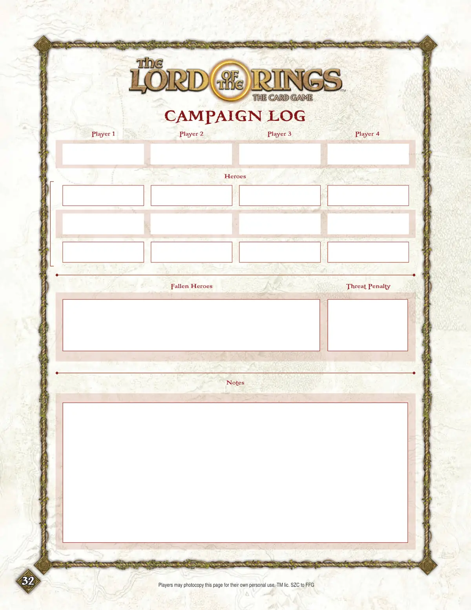
📝 第 32 页 AI 机翻对照（点击展开）
玩家1
陨落英雄
笔记
玩家2
威胁惩罚
玩家3
玩家4
英雄
战役日志
英雄
玩家可以复印此页供个人使用。TM 授权 SZC 给 FFG
TM
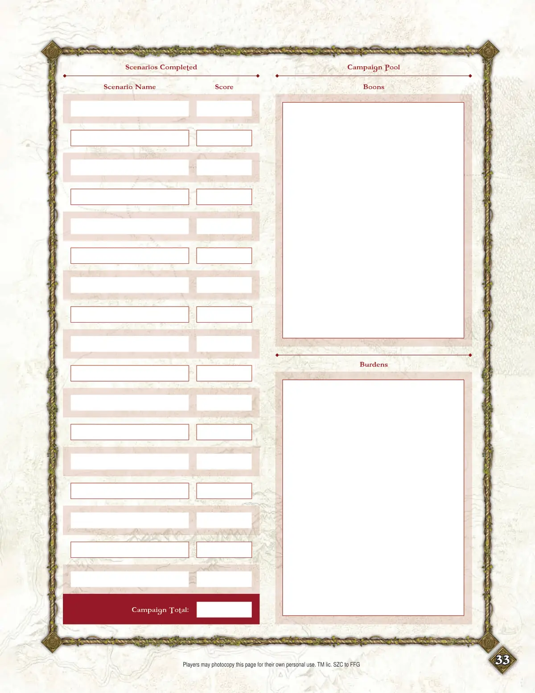
📝 第 33 页 AI 机翻对照（点击展开）
已完成场景
分数
场景名称
战役池
恩赐
负担
战役总计：
玩家可以复印此页供个人使用。TM 授权 SZC 给 FFG
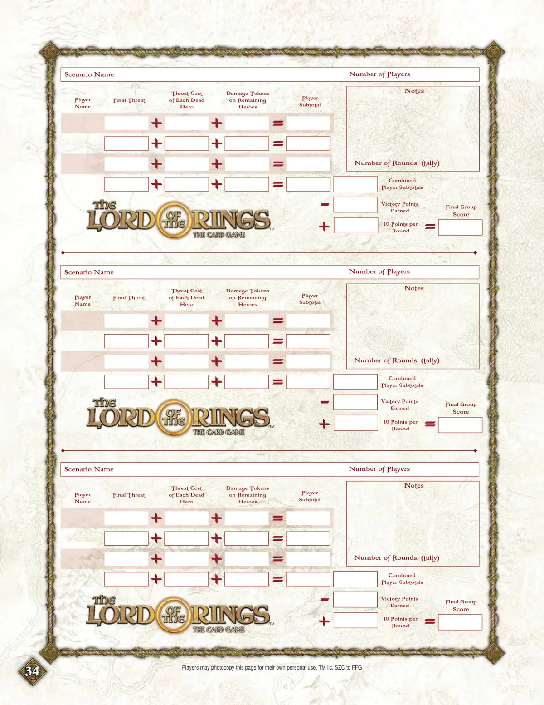
📝 第 34 页 AI 机翻对照（点击展开）
玩家可以复印此页供个人使用。TM lic. SZC to FFG
最终威胁
场景名称
每位死亡英雄的威胁成本
剩余英雄上的伤害指示物
获得的胜利点数
最终团队总分
玩家小计
备注
玩家数量
玩家姓名
合计玩家小计
每轮10分
轮数：（总计）
TM
最终威胁
场景名称
每位死亡英雄的威胁成本
剩余英雄上的伤害指示物
获得的胜利点数
最终团队总分
玩家小计
备注
玩家数量
玩家姓名
合计玩家小计
每轮10分
轮数：（总计）
TM
最终威胁
场景名称
每位死亡英雄的威胁成本
剩余英雄上的伤害指示物
获得的胜利点数
最终团队总分
玩家小计
备注
玩家数量
玩家姓名
合计玩家小计
每轮10分
轮数：（总计）
TM
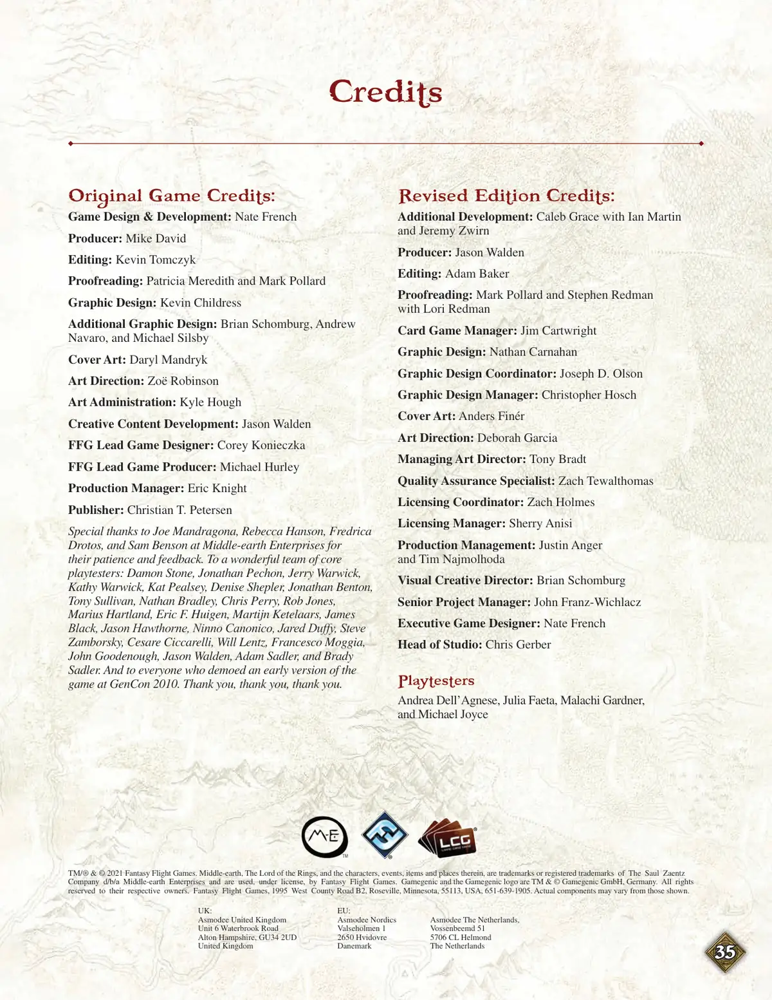
📝 第 35 页 AI 机翻对照（点击展开）
原版游戏制作人员：
游戏设计与开发：Nate French
制作人：Mike David
编辑：Kevin Tomczyk
校对：Patricia Meredith 和 Mark Pollard
平面设计：Kevin Childress
额外平面设计：Brian Schomburg, Andrew Navaro 和 Michael Silsby
封面艺术：Daryl Mandryk
艺术指导：Zoë Robinson
艺术管理：Kyle Hough
创意内容开发：Jason Walden
FFG 首席游戏设计师：Corey Konieczka
FFG 首席游戏制作人：Michael Hurley
生产经理：Eric Knight
出版商：Christian T. Petersen
特别感谢 Middle-earth Enterprises 的 Joe Mandragona, Rebecca Hanson, Fredrica Drotos 和 Sam Benson 的耐心和反馈。感谢核心测试团队：Damon Stone, Jonathan Pechon, Jerry Warwick, Kathy Warwick, Kat Pealsey, Denise Shepler, Jonathan Benton, Tony Sullivan, Nathan Bradley, Chris Perry, Rob Jones, Marius Hartland, Eric F. Huigen, Martijn Ketelaars, James Black, Jason Hawthorne, Ninno Canonico, Jared Duffy, Steve Zamborsky, Cesare Ciccarelli, Will Lentz, Francesco Moggia, John Goodenough, Jason Walden, Adam Sadler 和 Brady Sadler。感谢所有在 2010 年 GenCon 上演示游戏早期版本的人。非常感谢，非常感谢，非常感谢。
修订版制作人员：
额外开发：Caleb Grace 与 Ian Martin 和 Jeremy Zwirn
制作人：Jason Walden
编辑：Adam Baker
校对：Mark Pollard 和 Stephen Redman 与 Lori Redman
卡牌游戏经理：Jim Cartwright
平面设计：Nathan Carnahan
平面设计协调员：Joseph D. Olson
平面设计经理：Christopher Hosch
封面艺术：Anders Finér
艺术指导：Deborah Garcia
首席艺术总监：Tony Bradt
质量保证专员：Zach Tewalthomas
许可协调员：Zach Holmes
许可经理：Sherry Anisi
制作管理：Justin Anger 和 Tim Najmolhoda
视觉创意总监：Brian Schomburg
高级项目经理：John Franz-Wichlacz
执行游戏设计师：Nate French
工作室主管：Chris Gerber
测试人员
Andrea Dell'Agnese, Julia Faeta, Malachi Gardner 和 Michael Joyce
TM/® & © 2021 Fantasy Flight Games. Middle-earth, The Lord of the Rings, 以及其中的角色、事件、物品和地点，是 The Saul Zaentz Company d/b/a Middle-earth Enterprises 的商标或注册商标，并由 Fantasy Flight Games 根据许可使用。Gamegenic 和 Gamegenic 标志是 TM & © Gamegenic GmbH, Germany。所有权利归各自所有者所有。Fantasy Flight Games, 1995 West County Road B2, Roseville, Minnesota, 55113, USA, 651-639-1905。实际组件可能与所示有所不同。
制作人员
TM
®
英国：
Asmodee United Kingdom
Unit 6 Waterbrook Road
Alton Hampshire, GU34 2UD
United Kingdom
欧盟：
Asmodee Nordics
Valseholmen 1
2650 Hvidovre
丹麦
Asmodee The Netherlands，
Vossenbeemd 51
5706 CL Helmond
荷兰
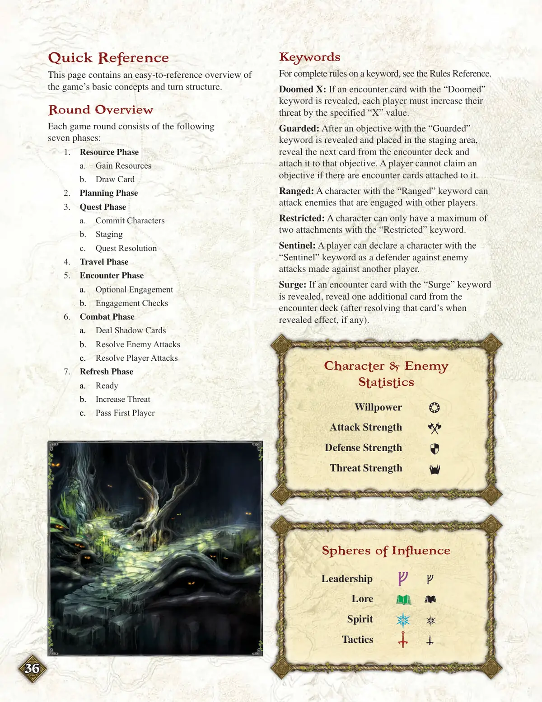
📝 第 36 页 AI 机翻对照（点击展开）
快速参考
本页包含游戏基本概念和回合结构的
便捷概览。
轮次概览
每个游戏轮包含以下
七个阶段：
1.
资源阶段
a.
获取资源
b.
摸牌
2.
规划阶段
3.
任务阶段
a.
派遣角色
b.
布置
c.
任务结算
4.
移动阶段
5.
遭遇阶段
a.
可选交战
b.
交战检查
6.
战斗阶段
a.
发放暗影牌
b.
结算敌人攻击
c.
结算玩家攻击
7.
刷新阶段
a.
准备
b.
增加威胁
c.
传递首位玩家
关键词
关于关键词的完整规则，请参见规则参考。
厄运X：如果一张带有"厄运"关键词的遭遇牌被揭示，每位玩家必须将其威胁值增加指定的"X"值。
守护：在带有"守护"关键词的目标牌被揭示并放置到布置区域后，从遭遇牌库中揭示下一张牌并将其附加到该目标上。如果有遭遇牌附加到目标上，玩家不能宣称该目标。
远程：带有"远程"关键词的角色可以攻击与其他玩家交战的敌人。
限制：一个角色最多只能拥有两张带有"限制"关键词的附属牌。
哨兵：玩家可以将带有"哨兵"关键词的角色宣布为防御者，以防御针对另一名敌人的攻击。
激增：如果一张带有"激增"关键词的遭遇牌被揭示，从遭遇牌库中额外揭示一张牌（在结算该牌的"揭示时"效果后，如果有的话）。
势力范围
领导
学识
精神
战术
意志力
攻击强度
防御强度
威胁强度
角色与敌人
数值